Chapter 5: Noise, Error Mitigation & Fault Tolerance¶
Qubits are noisy, and noise is the single biggest obstacle between today's machines and useful quantum computing. This chapter explains where errors come from, how today's hardware suppresses and mitigates them, and how quantum error correction — from three-qubit codes to surface codes, qLDPC codes and cat qubits — builds reliable logical qubits. It ends with decoders, magic states, the 2016-2026 logical-qubit milestones and the resource estimates that show what a fault-tolerant machine must deliver.
5.1 Where Quantum Errors Come From¶
A qubit is a tiny physical object — a superconducting circuit, a trapped ion, an atom — and it is constantly nudged by its surroundings. Those nudges slowly erase the information it holds (decoherence), and imperfect control pulses, neighbouring qubits and faulty read-outs add more mistakes. Today's best hardware still makes roughly one error per thousand two-qubit operations, which is why noise is the central problem of the field.
Think of it like…
A qubit is like a spinning coin balanced on a table inside a moving train: every vibration, draught and bump from a neighbour slowly topples it, and the longer you wait the less you can trust which way it is spinning.
Real-world example
Amara, a test engineer at the fictional Northlake Quantum Lab, measures a transmon with T1 = 200 µs. Her circuit keeps that qubit busy for 20 µs, so the chance it has decayed is about 1 − e^(−20/200) ≈ 9.5% before any gate errors are counted. She shortens the circuit by re-ordering gates, cuts the idle time to 8 µs and sees decay fall to about 4%.
How it works¶
- Energy leaks from the qubit into its environment, flipping |1⟩ towards |0⟩ (T1 relaxation).
- Random fluctuations scramble the phase between |0⟩ and |1⟩ (dephasing, measured by T2).
- Control pulses are slightly too long, too short or off-frequency, causing small systematic over- or under-rotations.
- Neighbouring qubits and wiring couple unintentionally (crosstalk), and some operations push the qubit outside its 0/1 levels (leakage).
- Finally the read-out itself can mislabel a 0 as a 1, adding measurement error on top of everything else.
Who uses it
Quantum hardware engineers, calibration and characterisation scientists, QEC researchers and anyone choosing which device to run on meets these error sources daily.
Key takeaway
Interviewers love the ratio question: what matters is coherence time divided by gate time (how many operations fit before the qubit forgets), not either number on its own.
Going deeper
- T1 is the energy-relaxation time and T2 the phase-coherence time; physics forces T2 ≤ 2·T1. A spin-echo measurement gives T2, while the shorter T2* also includes slow drifts an echo would cancel.
- Typical 2025-26 numbers: superconducting transmons reach T1 of roughly 100-300 µs with 20-100 ns gates, while trapped-ion hyperfine qubits keep coherence for seconds but need tens to hundreds of microseconds per two-qubit gate.
- Coherent errors (a consistent 1% over-rotation) add up in amplitude, so their damage can grow quadratically with circuit length; random (stochastic) errors grow only linearly, which is why randomised compiling converts one into the other.
- Google reported in 2021-22 that high-energy particles such as cosmic rays create bursts of quasiparticles that briefly raise error rates across a whole superconducting chip, roughly every ten seconds — a correlated error QEC theory must handle separately.
- Two-level-system (TLS) defects in the amorphous oxides of superconducting circuits drift in frequency over hours, so a qubit's T1 can change from one calibration to the next; providers recalibrate devices at least daily.
- Neutral-atom and ion platforms add their own errors: atoms can be lost from their tweezers, laser intensity and phase noise limit gate fidelity, and stray magnetic fields shift qubit frequencies unless 'clock' states are used.
Common mistakes & misconceptions
- Judging a qubit by T1 alone: a long T1 is useless if gates are slow or inaccurate; compare coherence to gate time and look at measured gate fidelities.
- Thinking quantum errors are only bit flips: phase errors have no classical equivalent and often dominate, so every useful code must catch both.
- Assuming every error is independent: crosstalk, leakage and radiation bursts produce correlated errors that break the simple models used in textbook threshold estimates.
Key concepts, algorithms, hardware, tools & milestones¶
| Name | What it does | Example |
|---|---|---|
| Decoherence Quantum physics (Zurek and others) · Concept · Current · Beginner |
The gradual loss of a qubit's quantum behaviour as it becomes entangled with its uncontrolled environment. | A superposition prepared on a transmon behaves like a classical coin flip after a few hundred microseconds if nothing protects it. |
| T1 energy relaxation Device physics · Concept · Current · Beginner |
Spontaneous decay from |1⟩ to |0⟩ as energy leaks into the environment; modelled as amplitude damping. | A qubit with T1 = 100 µs left idle for 10 µs has about a 9.5% chance of having decayed. |
| Dephasing (T2 and T2*) Device physics · Concept · Current · Beginner |
Random phase drift between |0⟩ and |1⟩ that destroys interference without changing energy; T2* includes slow drifts, T2 is measured with an echo. | Magnetic-field noise makes an ion's |+⟩ state slowly turn into an even mix of |+⟩ and |−⟩. |
| Coherent control error Calibration engineering · Concept · Current · Intermediate |
A systematic mistake such as rotating 181° instead of 180°, repeated identically every time the gate runs. | A 1° X-gate over-rotation repeated 100 times accumulates to a 100° error rather than averaging out. |
| Crosstalk (ZZ coupling) Superconducting and ion hardware · Concept · Current · Intermediate |
Unwanted interaction between qubits, so driving or merely idling one qubit disturbs a neighbour's phase or state. | Two always-coupled transmons acquire a phase shift that depends on each other's state, even with no gate applied. |
| Readout (measurement) error All platforms · Concept · Current · Beginner |
The measurement reports the wrong outcome, for example labelling a |1⟩ as 0, typically 0.1-2% of the time. | A device with 1% readout error turns a perfect Bell state's 50/50 counts into about 1% stray '01' and '10' results. |
| State-preparation and reset error All platforms · Concept · Current · Beginner |
The qubit does not start in exactly |0⟩, often due to leftover heat or an imperfect active reset. | Residual thermal population leaves 1% of transmons starting in |1⟩, so every circuit begins slightly wrong. |
| Quasiparticles and cosmic rays Google Quantum AI and others · Concept · Research · Advanced |
High-energy radiation breaks superconducting pairs, creating bursts of correlated errors across many qubits simultaneously. | Researchers saw sudden chip-wide error bursts roughly every ten seconds and traced them to ionising radiation. |
| 1/f flux and charge noise Device physics · Concept · Current · Advanced |
Slow, low-frequency noise whose strength rises at lower frequencies, causing qubit frequencies to wander. | Flux-tunable transmons are parked at a 'sweet spot' where their frequency is least sensitive to flux noise. |
| Laser phase and intensity noise Trapped-ion and neutral-atom hardware · Concept · Current · Intermediate |
Fluctuations in the lasers that drive gates, limiting gate fidelity on optically controlled qubits. | An ion-trap team stabilises laser power to 0.1% to push two-qubit gate fidelity above 99.9%. |
| Atom loss Neutral-atom platforms · Concept · Current · Intermediate |
An atom disappears from its optical tweezer during computation, an erasure-like error that must be detected and refilled. | Harvard-MIT-QuEra's 2025 3,000-atom array reloaded atoms mid-run to operate continuously for over two hours. |
| Error budget Systems engineering practice · Concept · Current · Intermediate |
A breakdown of the total circuit error into contributions from each source, guiding where engineering effort pays off most. | Northlake's budget shows 60% of two-qubit error comes from T1 during the gate, so they prioritise faster gates. |
5.2 Why Classical-Style Copying Doesn't Work¶
Classical computers protect data by keeping copies and taking a majority vote. Quantum information cannot be copied (the no-cloning theorem), looking at a qubit destroys its superposition, and errors can be any tiny rotation rather than a clean flip. Quantum error correction gets around all three problems by spreading information across entangled qubits and measuring only group properties (parities), never the data itself.
Protecting bits vs protecting qubits
| Classical bits | Qubits | |
|---|---|---|
| Make copies | Allowed — copy freely | Forbidden by no-cloning |
| Read the value | Harmless | Collapses superposition |
| Error types | Bit flips only | Bit flips, phase flips, in-between |
| Error size | Discrete | Continuous, digitised by measurement |
| Repair method | Majority vote | Parity checks + decoder |
Every classical trick needs a quantum replacement that never reads the data directly.
Think of it like…
It is like checking whether three sealed envelopes contain matching letters by weighing them in pairs: you learn which envelope is different without ever opening one and reading the secret inside.
Real-world example
Ben, an intern at the fictional start-up Qubitwise, tries to protect a qubit in |+⟩ by measuring it three times and voting — the first measurement collapses it to 0 or 1 and the superposition is gone. His mentor shows him the right way: entangle it into α|000⟩ + β|111⟩ and measure only whether neighbours agree, which reveals an error's location without revealing α or β.
How it works¶
- Accept that you cannot copy the unknown state α|0⟩ + β|1⟩; instead, entangle it into a larger encoded state such as α|000⟩ + β|111⟩.
- Measure parities (do qubits 1 and 2 agree?) using helper 'ancilla' qubits, which reveals errors but not α or β.
- Rely on measurement to 'digitise' a small continuous error into either no error or a definite Pauli flip.
- Look up which flip the parity pattern (the syndrome) points to and undo it, or simply track it in software.
- Repeat the parity checks continuously, because new errors keep arriving while you compute.
Who uses it
Every QEC researcher, quantum architect and student of quantum information needs this reasoning; it is the classic first lecture of any error-correction course.
Key takeaway
Memorise the three obstacles — no-cloning, measurement collapse, continuous errors — and the three answers: entangled redundancy, parity (syndrome) measurement, and error digitisation.
Going deeper
- No-cloning follows from linearity: no unitary U can map |ψ⟩|0⟩ to |ψ⟩|ψ⟩ for every ψ. Encoding α|0⟩+β|1⟩ as α|000⟩+β|111⟩ is allowed because it is one entangled state, not three copies.
- Any single-qubit error can be written as a combination e₀I + e₁X + e₂Y + e₃Z. Measuring the syndrome projects that continuous error onto one Pauli, so correcting just X, Y and Z handles every possible error.
- A classical 3-bit repetition code with a 1% flip rate fails only if two or more bits flip: 3p² − 2p³ ≈ 0.03%, a 33-fold improvement — the quantum version achieves the same against bit flips but is blind to phase flips.
- The Knill-Laflamme conditions state exactly when a set of errors is correctable: the code must make every pair of errors act identically on all codewords (up to a constant), so errors reveal nothing about the stored data.
- Counting arguments (the quantum Hamming bound) show at least five physical qubits are needed to protect one qubit against an arbitrary single-qubit error; the [[5,1,3]] code meets this bound exactly.
Common mistakes & misconceptions
- Saying the repetition code 'makes three copies': it creates one entangled three-qubit state, and measuring any single qubit would still destroy the superposition.
- Believing syndrome measurement reads the data: it measures only parities such as Z₁Z₂, which have the same value for |000⟩ and |111⟩.
- Concluding that continuous errors make correction impossible: measurement digitises them, which is the key insight that made QEC possible in 1995-96.
Key concepts, algorithms, hardware, tools & milestones¶
| Name | What it does | Example |
|---|---|---|
| No-cloning theorem (QEC view) Wootters & Zurek; Dieks (1982) · Principle · Current · Beginner |
No device can duplicate an unknown quantum state, so redundancy must come from entanglement, not copies. | Qubitwise cannot back up a qubit to disk; it encodes it into an entangled block instead. |
| Measurement collapse Born rule · Principle · Current · Beginner |
Measuring a qubit in the computational basis destroys its superposition, so data qubits must never be read during correction. | Measuring |+⟩ gives 0 or 1 at random and leaves no trace of the original phase. |
| Error digitisation Shor (1995); Steane (1996) · Principle · Current · Intermediate |
Syndrome measurement turns an arbitrary small error into either 'no error' or a definite Pauli flip that can be undone. | A 3° stray rotation becomes, after measurement, either nothing (most likely) or a full X flip the code corrects. |
| Pauli error basis Linear algebra · Math · Current · Intermediate |
I, X, Y and Z form a basis for all single-qubit errors, so correcting these four suffices for any error. | An amplitude-damping event is expanded into I, X and Y components, each caught by the code. |
| Classical repetition code Coding theory · Code · Legacy · Beginner |
Store each bit three or more times and take a majority vote; corrects up to ⌊(n−1)/2⌋ flips. | With a 1% flip rate, storing a bit as 000 and voting cuts the failure rate to about 0.03%. |
| Bit flip (X error) QEC terminology · Concept · Current · Beginner |
An error swapping |0⟩ and |1⟩, the quantum version of a classical bit flip. | A stray microwave pulse turns α|0⟩+β|1⟩ into α|1⟩+β|0⟩. |
| Phase flip (Z error) QEC terminology · Concept · Current · Beginner |
An error that flips the sign of |1⟩'s amplitude, invisible in 0/1 counts but fatal for interference. | |+⟩ silently becomes |−⟩; measured in the Z basis nothing looks wrong, but a following Hadamard gives the opposite answer. |
| Ancilla (syndrome) qubit QEC terminology · Concept · Current · Beginner |
A helper qubit that interacts with data qubits to extract a parity, then is measured and reset. | One ancilla gathers the parity of data qubits 1 and 2 via two CNOTs and is read out. |
| Syndrome QEC terminology · Concept · Current · Beginner |
The pattern of parity-check results that points to which error occurred without revealing the encoded data. | Syndrome (1,1) in a 3-qubit code means 'the middle qubit flipped'. |
| Logical vs physical qubit QEC terminology · Concept · Current · Beginner |
A logical qubit is one protected unit of information spread over many physical qubits. | Google's distance-7 surface code used 101 physical qubits to hold one logical qubit. |
| Quantum non-demolition (QND) measurement Measurement theory · Concept · Current · Intermediate |
A measurement that leaves the measured property unchanged, so repeating it gives the same answer. | Measuring parity Z₁Z₂ twice in a row without errors in between returns the same result both times. |
| Knill-Laflamme conditions Knill & Laflamme (1997) · Math · Current · Advanced |
Necessary and sufficient conditions for a code to correct a set of errors: errors must not reveal codeword information. | Students prove the 3-qubit code corrects single X errors by checking ⟨i|EₐEᵦ|j⟩ for each pair of errors. |
| Quantum Hamming bound QEC theory · Math · Current · Advanced |
A counting limit on how many errors a code of n qubits can distinguish; implies at least 5 qubits for one corrected qubit. | For n = 5: 2⁵ = 32 states equal 2 × (1 + 3×5) = 32, so [[5,1,3]] is a 'perfect' code. |
| Quantum Singleton bound Knill & Laflamme; Rains · Math · Current · Advanced |
Limits parameters of any code: n − k ≥ 2(d − 1), trading physical qubits against protection. | Encoding one qubit with distance 3 needs n ≥ 5, matching the five-qubit code. |
5.3 Error Suppression: Better Pulses, Twirling and Dynamical Decoupling¶
Error suppression means stopping errors before they happen, at the level of the hardware and compiler. Engineers shape control pulses carefully, insert 'echo' pulses into idle periods so slow noise cancels itself (dynamical decoupling), and randomise gates so stubborn systematic errors turn into milder random ones. It costs little or no extra runtime and is the first layer of defence on every real device.

Think of it like…
Dynamical decoupling is like a rower who drifts left with the current, then turns round and drifts back by the same amount: done at the right moments, the drift cancels and the boat ends where it started.
Real-world example
Delta Freight's quantum team (fictional) runs a 20-qubit circuit where some qubits wait about 2 µs during mid-circuit measurements. Turning on dynamical decoupling in Qiskit pads those idle windows with X-pulse pairs, and the measured fidelity of their test state rises noticeably at no extra shot cost. They also add Pauli twirling so the remaining errors are random, which their mitigation step needs.
How it works¶
- Calibrate single- and two-qubit gates daily so amplitudes, frequencies and durations match the target.
- Use pulse-shaping techniques such as DRAG to reduce leakage and phase errors during each gate.
- Choose the best physical qubits and couplers for the circuit (noise-aware layout and routing).
- Fill idle periods with dynamical-decoupling sequences (XX, XY4, CPMG) that refocus slow noise.
- Apply Pauli twirling or randomised compiling so leftover coherent errors average into stochastic noise.
Who uses it
Calibration engineers, compiler developers and every application team running on today's hardware use suppression — often switched on by default in vendor software.
Key takeaway
Know the three-layer vocabulary: suppression (avoid errors), mitigation (estimate around them in post-processing), correction (detect and fix them with redundancy).
Going deeper
- Dynamical decoupling descends from the 1950 Hahn spin echo in NMR: a π pulse halfway through an idle period reverses the phase accumulated from slow, static noise, so it cancels by the end.
- Common sequences include XX, XY4 (X-Y-X-Y, robust to pulse errors), CPMG and Uhrig spacing; Qiskit's PadDynamicalDecoupling pass inserts them into scheduled circuits, and IBM Runtime options expose sequence types such as XX, XpXm and XY4.
- DRAG (Derivative Removal by Adiabatic Gate, 2009) adds a shaped quadrature component to transmon pulses, reducing leakage to |2⟩ and phase errors, and is standard on superconducting devices.
- Pauli twirling sandwiches each two-qubit gate between random Pauli gates chosen so the ideal operation is unchanged; averaged over many random instances, any noise becomes a Pauli channel, which is easier to model, mitigate and decode.
- Suppression adds no sampling overhead, unlike mitigation, but cannot remove errors completely; vendors such as Q-CTRL sell automated suppression stacks (Fire Opal) that combine optimal pulses, layout and DD.
Common mistakes & misconceptions
- Adding dynamical decoupling everywhere: badly timed or poorly calibrated DD pulses can add errors, so test with and without it on your circuit.
- Treating suppression as error correction: it lowers error rates but never detects or repairs individual errors, so long circuits still fail.
- Forgetting that twirling needs many random instances: one twirled circuit is just a different circuit; the benefit appears only on average.
Key concepts, algorithms, hardware, tools & milestones¶
| Name | What it does | Example |
|---|---|---|
| Error suppression Industry terminology (IBM, Q-CTRL) · Concept · Current · Beginner |
Techniques that reduce error rates at the source, before or during execution, with no extra sampling cost. | Turning on DD and better pulses raises a GHZ-state fidelity without running more shots. |
| Dynamical decoupling (DD) Viola & Lloyd (1998), from NMR · Concept · Current · Intermediate |
Inserting sequences of π pulses into idle periods so slowly varying noise cancels itself out. | A qubit waiting 3 µs for a mid-circuit measurement receives two X pulses that refocus its phase drift. |
| Hahn spin echo Erwin Hahn (1950) · Concept · Current · Intermediate |
A single π pulse halfway through a wait that reverses static phase drift; the ancestor of all DD sequences. | T2 measured with an echo is longer than T2* because the echo cancels slow field offsets. |
| DD sequences: XX, XY4, CPMG NMR and quantum-control literature · Protocol · Current · Intermediate |
Named patterns of echo pulses with different robustness to pulse imperfections and noise spectra. | Delta Freight compares XX and XY4 on IBM hardware and keeps XY4, which tolerates small pulse-amplitude errors better. |
| PadDynamicalDecoupling Qiskit transpiler pass · Tool · Current · Advanced |
A scheduling pass that fills idle windows in a circuit with a chosen DD sequence, respecting gate timings. | pm.scheduling = PassManager([ALAPScheduleAnalysis(durations), PadDynamicalDecoupling(durations, [XGate(), XGate()])]) inserts XX pairs. |
| DRAG pulses Motzoi et al. (2009) · Concept · Current · Advanced |
Pulse shaping that adds a derivative component to cancel leakage and phase errors in transmon gates. | Calibration software tunes a DRAG coefficient so a 20 ns X gate leaks less to |2⟩. |
| Pauli twirling Bennett et al. (1996); Knill (2004) · Protocol · Current · Intermediate |
Surrounding gates with random Pauli pairs that leave the ideal gate unchanged but turn noise into a Pauli channel. | Each ECR gate gets random Paulis before and after; 32 twirled copies are averaged in the final estimate. |
| Randomised compiling Wallman & Emerson (2016) · Protocol · Current · Advanced |
Compiling many logically equivalent random versions of a circuit so coherent errors average into stochastic noise. | A chemistry team runs 50 randomised versions of one circuit and averages, reducing systematic bias in the energy. |
| Measurement twirling IBM (TREX building block) · Protocol · Current · Advanced |
Randomly flipping qubits before readout and un-flipping the result so readout error becomes symmetric and easy to correct. | Half the shots apply X before measurement and invert the bit afterwards, symmetrising 0→1 and 1→0 errors. |
| Gate calibration All hardware providers · Concept · Current · Beginner |
Routine measurements that retune pulse amplitudes, frequencies and phases as hardware drifts. | IBM publishes backend properties after each calibration, including per-qubit T1 and two-qubit gate error. |
| Noise-aware qubit mapping Compiler technique · Concept · Current · Intermediate |
Choosing which physical qubits and couplers run the circuit using current calibration data to avoid bad ones. | The transpiler avoids a coupler with 3% error, routing a CNOT through a 0.4% link instead. |
| Optimal control (GRAPE) Khaneja et al. (2005) · Algorithm · Current · Advanced |
Numerical optimisation of pulse shapes to perform a target gate faster or more accurately than standard pulses. | A lab uses GRAPE to design a 40 ns two-qubit gate that outperforms its default 60 ns gate. |
| Q-CTRL Fire Opal Q-CTRL · Software · Current · Intermediate |
Commercial automated error-suppression software combining optimised layout, pulses and DD, also offered as a Qiskit Function. | A finance team runs QAOA through Fire Opal and gets sharper solution distributions without changing its code. |
| Suppression vs mitigation vs correction IBM terminology · Concept · Current · Beginner |
Three layers: suppress errors at source, mitigate their effect statistically afterwards, or correct them with redundancy in real time. | A roadmap slide shows today's jobs using suppression plus mitigation, with correction taking over as logical qubits mature. |
5.4 Error Mitigation: ZNE, PEC and Readout Correction¶
Error mitigation accepts that a noisy computer will make mistakes and corrects the final average answer using clever post-processing. You run deliberately noisier versions of a circuit, or many randomised variants, and combine the results to estimate what a noise-free machine would have reported. It works for expectation values (averages) rather than single answers, and the price is many more circuit runs.
Think of it like…
It is like weighing yourself on a bathroom scale you know is off: you weigh a 5 kg and a 10 kg bag too, see how the error grows, and extrapolate back to your true weight.
Real-world example
Jonas, a chemistry PhD student, measures ⟨ZZ⟩ for a Bell state on a noisy simulator with 2% two-qubit depolarising noise. With one CNOT he gets 0.980; folding it to 3 and 5 CNOTs gives 0.941 and 0.904. A straight-line fit back to zero noise predicts 0.999 — almost the ideal 1.0 — at the cost of running three circuits instead of one.
How it works¶
- Characterise the noise (calibrate readout, or learn a noise model for each layer of two-qubit gates).
- Generate circuit variants: amplified-noise copies for ZNE, randomly sampled correction circuits for PEC, or twirled readouts.
- Run all variants with enough shots to keep statistical error under control.
- Combine results: extrapolate to zero noise, take a signed weighted average, or invert the readout confusion matrix.
- Report the mitigated expectation value together with its (larger) error bar.
Who uses it
Application scientists running chemistry, materials and physics simulations on today's machines, and the teams building runtime services such as IBM's Estimator, rely on mitigation.
Key takeaway
Key interview fact: mitigation costs sampling overhead that grows exponentially with circuit size and noise, so it bridges the gap to fault tolerance but cannot replace it.
Going deeper
- Zero-noise extrapolation (Temme, Bravyi & Gambetta 2017; Li & Benjamin 2017) amplifies noise by gate folding (G → G G† G) or pulse stretching, then fits linear, polynomial or exponential models back to zero noise; it is cheap but can be biased.
- Probabilistic error cancellation writes the inverse of each noise channel as a quasi-probability mix of implementable operations; it is unbiased, but sampling cost grows as γ², where γ multiplies with every noisy layer, so cost explodes exponentially with depth.
- IBM's 2023 'utility' experiment (Kim et al., Nature) used ZNE with probabilistic error amplification on the 127-qubit Eagle processor for circuits with up to 2,880 CNOTs, comparing mitigated results to classical approximations.
- IBM Runtime's Estimator exposes resilience levels: 0 = none, 1 = readout mitigation with TREX (the default), 2 = adds ZNE with gate twirling; PEC is available as an explicit option for small, high-value circuits.
- Mitigation corrects averages, not individual shots, so it suits expectation-value tasks (energies, correlators) but not algorithms needing one correct bitstring, such as Shor's algorithm.
Common mistakes & misconceptions
- Assuming mitigation scales indefinitely: overhead grows exponentially with circuit volume, so beyond a point the required shots become impractical.
- Treating a mitigated value as exact: always report its error bar, which is larger than the raw value's, and check against a known benchmark when possible.
- Applying readout mitigation and calling the job error-corrected: no qubits were protected; only the statistics were adjusted.
Try it: Zero-noise extrapolation by hand with Qiskit Aer (pip install qiskit qiskit-aer)¶
import numpy as np
from qiskit import QuantumCircuit
from qiskit.quantum_info import SparsePauliOp
from qiskit_aer.noise import NoiseModel, depolarizing_error
from qiskit_aer.primitives import EstimatorV2 as Estimator
noise = NoiseModel()
noise.add_all_qubit_quantum_error(depolarizing_error(0.02, 2), ["cx"])
est = Estimator(options={"backend_options": {"noise_model": noise}})
def bell(fold): # fold = 1, 3, 5 -> CX repeated (CX·CX = identity)
qc = QuantumCircuit(2); qc.h(0)
for _ in range(fold): qc.cx(0, 1)
return qc
scales = [1, 3, 5]
vals = [est.run([(bell(s), SparsePauliOp("ZZ"))]).result()[0].data.evs for s in scales]
fit = np.polyfit(scales, vals, 1)
print("noisy:", [round(float(v), 3) for v in vals])
print("zero-noise estimate:", round(float(np.polyval(fit, 0)), 3), "(ideal 1.0)")
Key concepts, algorithms, hardware, tools & milestones¶
| Name | What it does | Example |
|---|---|---|
| Zero-noise extrapolation (ZNE) Temme, Bravyi & Gambetta; Li & Benjamin (2017) · Algorithm · Current · Intermediate |
Run a circuit at several amplified noise levels and extrapolate the measured average back to zero noise. | Jonas folds CNOTs to 1×, 3× and 5× noise and fits a line to estimate the noise-free ⟨ZZ⟩. |
| Gate folding Giurgica-Tiron et al. (2020) · Concept · Current · Intermediate |
Amplifying noise by replacing a gate G with G·G†·G, which is logically identical but noisier. | One CNOT becomes three CNOTs, tripling its noise while leaving the ideal output unchanged. |
| Probabilistic error amplification (PEA) IBM (Kim et al., 2023) · Algorithm · Current · Advanced |
Learns a Pauli noise model, then amplifies noise by randomly injecting extra Paulis instead of folding gates. | IBM's 127-qubit Ising experiment used PEA-based ZNE to reach circuits of up to 2,880 CNOTs. |
| Probabilistic error cancellation (PEC) Temme, Bravyi & Gambetta (2017) · Algorithm · Current · Advanced |
Cancels learned noise on average by randomly inserting correction operations with positive and negative weights. | A materials team uses PEC on a 10-qubit circuit and accepts a 50× shot overhead for an unbiased estimate. |
| Sparse Pauli-Lindblad noise model van den Berg et al. (2023) · Math · Current · Advanced |
An efficiently learnable noise model, layer by layer, that powers PEC and PEA on large devices. | The runtime learns about 300 Pauli error rates per gate layer before running PEC. |
| Sampling overhead Error-mitigation theory · Concept · Current · Intermediate |
The extra number of shots mitigation needs; grows exponentially with the number and noise of gates. | If γ = 1.02 per layer, 300 layers give γ² ≈ 1.5 × 10⁵ times more shots — impractical. |
| Readout error mitigation Standard technique · Algorithm · Current · Beginner |
Measures a confusion matrix of how often 0 is read as 1 and vice versa, then inverts it on results. | Calibrating |00⟩, |01⟩, |10⟩, |11⟩ lets a team correct a 2% bias in Bell-state counts. |
| M3 (matrix-free measurement mitigation) IBM Quantum (Nation et al., 2021) · Tool · Current · Intermediate |
Scalable readout mitigation that corrects only the bitstrings actually observed, avoiding a 2ⁿ × 2ⁿ matrix. | M3 mitigates a 50-qubit GHZ readout in seconds on a laptop. |
| TREX IBM (van den Berg et al., 2022) · Algorithm · Current · Intermediate |
Twirled readout error extinction: twirls measurements, then divides out the learned average readout error. | Estimator at resilience level 1 applies TREX automatically to every expectation value. |
| Symmetry verification and post-selection Bonet-Monroig et al.; McArdle et al. (2018-19) · Algorithm · Current · Intermediate |
Discards shots that violate a known conservation law, such as particle number in a chemistry circuit. | Shots with the wrong electron count are thrown away, removing many error-affected samples. |
| Clifford data regression (CDR) Czarnik et al. (2021) · Algorithm · Current · Advanced |
Learns a correction from near-Clifford circuits that a classical computer can simulate exactly, then applies it to the target. | A team trains a linear correction on 100 Clifford-like circuits and applies it to their VQE energy. |
| Virtual distillation Huggins et al.; Koczor (2021) · Algorithm · Research · Advanced |
Uses several copies of a noisy state to estimate observables of a purer version of that state. | Two copies of a noisy 4-qubit state are entangled to suppress the dominant error component. |
| Mitiq Unitary Foundation (open source) · Tool · Current · Intermediate |
Python toolkit implementing ZNE, PEC, CDR and more, working with Qiskit, Cirq, pyQuil, Braket and PennyLane circuits. | A student wraps her Cirq executor in mitiq.zne.execute_with_zne to mitigate one expectation value. |
| Estimator resilience levels IBM Quantum Compute service (Qiskit Runtime) · Tool · Current · Intermediate |
Preset mitigation bundles: 0 none, 1 TREX readout mitigation, 2 adds ZNE with gate twirling. | options.resilience_level = 2 tells the Estimator to run ZNE with twirling automatically. |
| Utility experiment (IBM, 2023) IBM Quantum, Nature 618 (2023) · Milestone · Current · Intermediate |
127-qubit Eagle results, mitigated with ZNE, on dynamics circuits beyond brute-force simulation, sparking the 'utility era' debate. | Classical tensor-network groups reproduced many results within weeks, showing why mitigated claims need careful benchmarking. |
5.5 QEC Basics: Three-Qubit Codes and Syndrome Measurement¶
The simplest quantum codes protect one qubit by spreading it over three. The bit-flip code turns α|0⟩ + β|1⟩ into α|000⟩ + β|111⟩, then checks whether neighbouring qubits agree; the pattern of disagreements (the syndrome) points to the flipped qubit. The phase-flip code does the same job for phase errors by working in the |+⟩/|−⟩ basis.
Bit-flip code syndrome table
| Syndrome (Z₀Z₁, Z₁Z₂) | Correction | |
|---|---|---|
| No error | +1, +1 → (0,0) | None |
| X on qubit 0 | −1, +1 → (1,0) | Apply X₀ |
| X on qubit 1 | −1, −1 → (1,1) | Apply X₁ |
| X on qubit 2 | +1, −1 → (0,1) | Apply X₂ |
Two parity checks distinguish four situations — enough to locate any single bit flip.
Think of it like…
Three friends memorise the same phone number; instead of asking anyone to say it aloud, you only ask pairs 'do you two agree?', which is enough to spot the one who misremembered.
Real-world example
Lena, a student at a fictional summer school, encodes |0⟩ into three qubits, deliberately applies X to the middle qubit, and measures the two parities with two ancilla qubits. The ancillas report (1,1), which her lookup table maps to 'middle qubit flipped'; a conditional X restores 000 in all 200 shots on the simulator.
How it works¶
- Encode: two CNOTs from the data qubit spread α|0⟩ + β|1⟩ into α|000⟩ + β|111⟩.
- Let errors happen (or inject one on purpose for testing).
- Extract the syndrome: CNOTs copy the parity of qubits 0 & 1 and of qubits 1 & 2 onto two ancillas, which are measured.
- Decode: map the 2-bit syndrome to the most likely single error using a lookup table.
- Correct: apply X to the identified qubit (or just record it in software) and repeat the cycle.
Who uses it
Every QEC course starts here, and hardware teams still run repetition codes as calibration and benchmarking experiments on new chips.
Key takeaway
Remember the bit-flip code's syndrome table: (0,0) none, (1,0) qubit 0, (1,1) qubit 1, (0,1) qubit 2 — and that it gives no protection against phase flips.
Going deeper
- The parities measured are the stabilisers Z₀Z₁ and Z₁Z₂; both codewords |000⟩ and |111⟩ give +1 for each, so the measurement reveals errors but not the encoded amplitudes α and β.
- The phase-flip code is the bit-flip code conjugated by Hadamards: encode into |+++⟩ and |−−−⟩ and measure X₀X₁ and X₁X₂; it catches Z errors but is blind to X errors.
- A distance-3 repetition code fails when two or more qubits flip, so its logical error rate scales as about 3p²; at p = 0.1% that is roughly 3 × 10⁻⁶ per round.
- In 2021 Google ran repetition codes of up to 21 qubits on Sycamore (Nature 595) and showed logical bit-flip errors falling exponentially with code size — a stepping stone to full surface codes.
- Real devices measure syndromes repeatedly; comparing consecutive rounds ('detection events') lets the decoder also catch faulty measurements, which a single round cannot distinguish from data errors.
Common mistakes & misconceptions
- Thinking the 3-qubit code is a full quantum code: it corrects only one error type; Shor's 9-qubit code was needed to handle both.
- Measuring the data qubits to check them: that collapses the state; always route parity information through ancillas.
- Assuming one syndrome round is enough: ancillas and measurements are noisy too, so codes repeat rounds and decode the history.
Try it: Bit-flip code with syndrome extraction and feed-forward correction in Qiskit¶
from qiskit import QuantumCircuit, QuantumRegister, ClassicalRegister
from qiskit_aer import AerSimulator
data = QuantumRegister(3, "d"); anc = QuantumRegister(2, "a")
syn = ClassicalRegister(2, "syn"); out = ClassicalRegister(3, "out")
qc = QuantumCircuit(data, anc, syn, out)
qc.cx(0, 1); qc.cx(0, 2) # encode |0> -> |000>
qc.x(1) # inject a bit flip on qubit 1
qc.cx(0, 3); qc.cx(1, 3) # parity d0 xor d1 -> a0
qc.cx(1, 4); qc.cx(2, 4) # parity d1 xor d2 -> a1
qc.measure(anc, syn)
with qc.if_test((syn, 0b11)): qc.x(1) # syndrome 11 -> fix middle qubit
with qc.if_test((syn, 0b01)): qc.x(0)
with qc.if_test((syn, 0b10)): qc.x(2)
qc.measure(data, out)
print(AerSimulator().run(qc, shots=200).result().get_counts()) # {'000 11': 200}
Key concepts, algorithms, hardware, tools & milestones¶
| Name | What it does | Example |
|---|---|---|
| Three-qubit bit-flip code Peres (1985); QEC textbooks · Code · Current · Beginner |
Encodes one qubit as α|000⟩ + β|111⟩ and corrects any single X error using two parity checks. | Lena's circuit corrects a deliberately injected X on the middle qubit in every shot. |
| Three-qubit phase-flip code QEC textbooks (Nielsen & Chuang) · Code · Current · Beginner |
Encodes into |+++⟩ and |−−−⟩ to correct a single Z error, using X-type parity checks. | Adding Hadamards around the bit-flip circuit turns it into a phase-flip code. |
| Encoding circuit QEC practice · Concept · Current · Beginner |
The gates that map an unencoded qubit into the code space, e.g. two CNOTs for the repetition code. | CX(0,1) then CX(0,2) turns α|0⟩ + β|1⟩ into α|000⟩ + β|111⟩. |
| Parity check (ZZ measurement) QEC practice · Concept · Current · Beginner |
Measuring whether two qubits agree, without learning their individual values, using an ancilla and two CNOTs. | Ancilla a0 collects d0 ⊕ d1; a result of 1 means those two data qubits disagree. |
| Lookup-table decoding QEC practice · Algorithm · Current · Beginner |
Mapping each syndrome directly to its most likely correction; practical only for small codes. | Syndrome (1,1) maps to 'apply X to qubit 1' in a four-row table. |
| Mid-circuit measurement and feed-forward IBM, Quantinuum, Google hardware · Concept · Current · Intermediate |
Measuring ancillas during a circuit and conditioning later gates on the result, needed for real-time correction. | Qiskit's if_test applies X only when the syndrome register equals 0b11. |
| Pauli frame tracking Knill (2005) · Concept · Current · Intermediate |
Recording corrections in software instead of applying gates, then reinterpreting later measurement results accordingly. | Rather than applying X to qubit 2, the controller flips that qubit's final measured bit. |
| Code distance (d) QEC terminology · Concept · Current · Beginner |
The smallest number of single-qubit errors that can change one codeword into another undetectably; corrects ⌊(d−1)/2⌋ errors. | The 3-qubit repetition code has distance 3 against bit flips and corrects one of them. |
| Logical error rate QEC terminology · Metric · Current · Beginner |
How often the encoded information is corrupted despite correction, per round or per operation. | At p = 0.1% physical flip rate, a 3-qubit code's logical error is about 3 × 10⁻⁶. |
| Detection event (detector) Google Quantum AI / Stim terminology · Concept · Current · Intermediate |
A change in a stabiliser's value between consecutive rounds, the raw input to modern decoders. | A parity that reads +1, −1, −1 across three rounds gives one detection event, at round two. |
| Measurement error in syndrome extraction QEC practice · Concept · Current · Intermediate |
A faulty ancilla readout that looks like a data error unless syndromes are repeated over time. | A single flipped ancilla outcome that reverts next round is recognised as a measurement error, not a data error. |
| Hook error Fault-tolerance theory · Concept · Current · Advanced |
One ancilla fault that spreads through CNOTs to several data qubits, potentially reducing effective code distance. | Surface-code circuits choose CNOT order carefully so hook errors run parallel to the logical operator. |
| Google repetition-code experiment (2021) Google Quantum AI, Nature 595 · Milestone · Current · Intermediate |
Repetition codes of 5 to 21 qubits on Sycamore showed exponential suppression of one error type with code size. | Each increase in code size cut the logical bit-flip error by a roughly constant factor. |
5.6 Shor's Code, Steane's Code and the Stabiliser Formalism¶
Shor's 1995 nine-qubit code was the first to protect a qubit against any single error, by nesting a phase-flip code inside bit-flip codes. The stabiliser formalism, developed by Daniel Gottesman, describes such codes compactly: instead of writing out codeword states, you list the parity checks (stabilisers) that every valid codeword passes. Almost all practical codes — Steane, surface, colour and qLDPC codes — are stabiliser codes.

Think of it like…
Instead of listing every valid licence plate, a registry publishes the checksum rules all plates must satisfy; a plate that fails a rule is wrong, and which rules fail hints at which character was mistyped.
Real-world example
Priya, a quantum software engineer at fictional Helix Analytics, describes the Steane code with six stabiliser generators acting on seven qubits. When a Y error hits qubit 4, three of the six checks flip; the X-type and Z-type results each point to qubit 4, so she applies Y there — all without writing a single 128-entry state vector.
How it works¶
- Pick commuting Pauli operators (stabiliser generators) such as Z₁Z₂ or XXXX; the code space is where all of them equal +1.
- Count qubits: n physical qubits and n − k independent generators leave k logical qubits.
- Find logical operators (X̄, Z̄) that commute with every stabiliser but are not stabilisers themselves.
- Measure every generator each round; flipped values (−1) form the syndrome.
- A decoder infers the likely error from the syndrome; correction or Pauli-frame update follows.
Who uses it
QEC researchers, quantum architects and compiler engineers use stabiliser language daily; it underpins tools such as Stim and every modern code paper.
Key takeaway
Learn the [[n,k,d]] notation cold: Shor = [[9,1,3]], Steane = [[7,1,3]], five-qubit code = [[5,1,3]], surface code = [[d², 1, d]].
Going deeper
- Shor's code concatenates a phase-flip code with three bit-flip codes, giving 9 qubits and 8 stabiliser generators (six ZZ-type, two of weight-6 X-type); it corrects any single-qubit error and has distance 3.
- Steane's [[7,1,3]] code is a CSS code built from the classical [7,4,3] Hamming code; its logical H, S and CNOT are transversal (applied qubit-by-qubit), which makes fault-tolerant Clifford gates easy.
- The stabiliser group of an [[n,k]] code has n − k independent generators, so a 2ⁿ-dimensional state space is described by about n² bits rather than 2ⁿ complex amplitudes — the trick behind efficient Clifford simulation (Gottesman-Knill).
- CSS codes (Calderbank, Shor, Steane 1996) separate checks into all-X and all-Z types, so bit-flip and phase-flip decoding can run independently; surface, colour and most qLDPC codes are CSS.
- Error-detecting codes with distance 2, such as [[4,2,2]] and Quantinuum's 'iceberg' codes [[k+2,k,2]], cannot correct but can flag errors cheaply, supporting post-selection experiments with many logical qubits.
Common mistakes & misconceptions
- Confusing distance-2 detection with correction: [[k+2,k,2]] codes discard flagged runs, so success rates fall as circuits grow.
- Thinking stabilisers must be measured one qubit at a time: each generator is a multi-qubit parity measured via an ancilla (or directly on some hardware).
- Assuming more qubits always means a better code: the [[5,1,3]] code protects as well against single errors as Shor's 9-qubit code.
Key concepts, algorithms, hardware, tools & milestones¶
| Name | What it does | Example |
|---|---|---|
| Shor's nine-qubit code Peter Shor (1995) · Code · Legacy · Intermediate |
The first quantum error-correcting code: 9 qubits protect one against any single-qubit error, [[9,1,3]]. | Students derive it by encoding |+⟩/|−⟩ phase-flip blocks, each guarded by a 3-qubit bit-flip code. |
| Steane code Andrew Steane (1996) · Code · Current · Intermediate |
The [[7,1,3]] CSS code from the classical Hamming code, with transversal Clifford gates. | Quantinuum ran real-time Steane-code correction on its H1 trapped-ion system in 2021. |
| Five-qubit perfect code Laflamme et al.; Bennett et al. (1996) · Code · Current · Intermediate |
The smallest code correcting any single-qubit error, [[5,1,3]], meeting the quantum Hamming bound. | A homework set checks that its four generators XZZXI, IXZZX, XIXZZ, ZXIXZ all commute. |
| [[n,k,d]] notation QEC convention · Math · Current · Beginner |
n physical qubits encode k logical qubits with distance d; double brackets mark a quantum code. | IBM's gross code is [[144,12,12]]: 144 data qubits, 12 logical qubits, distance 12. |
| Stabiliser group and generators Daniel Gottesman (PhD thesis, 1997) · Math · Current · Intermediate |
A commuting set of Pauli operators that leave every codeword unchanged; a few generators define the whole code. | The bit-flip code's stabiliser group is generated by just Z₀Z₁ and Z₁Z₂. |
| Logical operators Stabiliser formalism · Concept · Current · Intermediate |
Pauli operators that commute with all stabilisers but act non-trivially on the encoded qubit. | In the Steane code X̄ = XXXXXXX flips the logical qubit while passing every parity check. |
| CSS codes Calderbank, Shor & Steane (1996) · Code · Current · Intermediate |
Codes built from two compatible classical codes, with separate X-type and Z-type stabilisers. | Surface codes are CSS: plaquettes check Z parity, stars check X parity. |
| Transversal gate Fault-tolerance theory · Concept · Current · Intermediate |
A logical gate applied as independent single-qubit (or pairwise) gates across code blocks, so errors cannot spread within a block. | Applying H to all seven Steane qubits performs a logical Hadamard fault-tolerantly. |
| Subsystem codes (Bacon-Shor) Bacon (2006) · Code · Research · Advanced |
Codes with extra 'gauge' qubits that simplify measurements to low-weight checks at some cost in performance. | The Bacon-Shor code measures only two-qubit parities, attractive on hardware with limited gates. |
| [[4,2,2]] error-detecting code QEC literature · Code · Current · Intermediate |
The smallest code detecting any single error, encoding two logical qubits in four physical qubits. | Early experiments on IBM and Rigetti devices post-selected [[4,2,2]] runs to show detected-error benefits. |
| Iceberg code Self, Benedetti & Amaro (Quantinuum, 2024) · Code · Emerging · Advanced |
A [[k+2,k,2]] error-detecting code wrapping many logical qubits with only two extra qubits, used for post-selection. | Quantinuum reported computations with up to 94 error-protected logical qubits on a trapped-ion processor in 2026 using iceberg codes. |
| Code concatenation Knill & Laflamme; Aharonov & Ben-Or (1996-97) · Concept · Current · Intermediate |
Encoding each physical qubit of a code with the same or another code, repeatedly, to drive errors down level by level. | Two levels of Steane code use 49 qubits; logical error falls roughly as (p/p_th)^4. |
5.7 The Threshold Theorem and Below-Threshold Scaling¶
The threshold theorem says that if every physical component's error rate is below a certain value (the threshold), you can make logical errors as small as you like by using bigger codes, at a cost that grows only modestly. Above the threshold, adding qubits makes things worse; below it, each step up in code size divides the error rate by a roughly constant factor. Reaching 'below threshold' in experiments was the field's key milestone of 2023-2024.
Think of it like…
It is like a leaky bucket chain: if each person spills less than a critical amount, adding more people (and checks) gets more water to the end; if they spill more, a longer chain just loses more.
Real-world example
Marco, a QEC engineer at fictional Corvid Quantum, has hardware at p = 0.1% against a 1% surface-code threshold. Using p_L ≈ 0.1 × (p/p_th)^((d+1)/2), he estimates logical error 10⁻³ at distance 3, 10⁻⁵ at distance 7 and 10⁻⁷ at distance 11. Each +2 in distance buys about a 10× improvement — his suppression factor Λ is 10.
How it works¶
- Characterise physical error rates of gates, measurements and idling under a realistic circuit-level noise model.
- Compare them with the threshold of your chosen code and decoder (≈1% for the surface code with good decoding).
- If below threshold, increase the code distance d; logical error drops roughly as (p/p_th)^((d+1)/2).
- Measure Λ, the factor by which logical error falls each time distance increases by two.
- Choose the smallest distance that meets your algorithm's target error per operation (e.g. 10⁻⁹ or 10⁻¹²).
Who uses it
QEC theorists, hardware roadmap planners and resource-estimation teams use threshold arguments to decide how many physical qubits a useful machine needs.
Key takeaway
Quote the Willow numbers: Λ ≈ 2.14 from distance 3 to 5 to 7, logical error ≈ 0.143% per cycle at distance 7 — below threshold but still far from the 10⁻⁶ or lower needed for large algorithms.
Going deeper
- The theorem was proved independently in 1996-97 by Aharonov & Ben-Or, Knill, Laflamme & Zurek, and Kitaev; Aliferis, Gottesman & Preskill later gave a rigorous concatenated-code threshold of about 2.7 × 10⁻⁵ (2005), far below what modern codes tolerate.
- With concatenation, k levels give logical error p_th·(p/p_th)^(2^k) — doubly exponential suppression — while qubit count grows only exponentially in k, i.e. polylogarithmically in the target accuracy.
- For the surface code under circuit-level depolarising noise the threshold is around 1% (estimates range roughly 0.5-1% depending on noise model and decoder), which is why 99.9% two-qubit gates give useful headroom.
- Google's Willow paper (Nature, 2025) reported Λ = 2.14 ± 0.02, a distance-7 logical error of 0.143% per cycle and a logical lifetime 2.4 times its best physical qubit — the first clear below-threshold, beyond-breakeven surface-code memory.
- Threshold proofs assume errors are local and weakly correlated; leakage, cosmic-ray bursts and long-range crosstalk violate those assumptions and must be engineered away (leakage removal, shielding, gap engineering).
Common mistakes & misconceptions
- Thinking 'below threshold' means 'error-free': at Λ ≈ 2 you need very large distances (and many qubits) to reach 10⁻⁹ logical error.
- Quoting one threshold number for every situation: it depends on the code, the decoder, the noise model and whether measurement errors are included.
- Confusing breakeven with threshold: breakeven means a logical qubit beats the best physical one; threshold means bigger codes keep getting better.
Key concepts, algorithms, hardware, tools & milestones¶
| Name | What it does | Example |
|---|---|---|
| Threshold theorem Aharonov & Ben-Or; Knill, Laflamme & Zurek; Kitaev (1996-97) · Principle · Current · Intermediate |
Below a constant physical error rate, arbitrarily long quantum computations become reliable with modest overhead. | Corvid Quantum's 0.1% hardware is under the 1% surface-code threshold, so growing the code helps. |
| Fault tolerance QEC theory · Concept · Current · Intermediate |
Designing every gadget so one fault cannot spread into an uncorrectable pattern of errors. | Syndrome circuits are arranged so a single faulty CNOT causes at most one correctable error. |
| Error threshold (p_th) QEC theory · Metric · Current · Beginner |
The physical error rate below which increasing code size reduces logical error; about 1% for the surface code. | A team with 2% two-qubit error knows larger surface codes will only make things worse. |
| Suppression factor Λ (lambda) Google Quantum AI convention · Metric · Current · Intermediate |
The ratio by which logical error falls when code distance increases by two. | Willow showed Λ ≈ 2.14: the distance-7 error rate was about half the distance-5 rate. |
| Scaling law p_L ≈ A(p/p_th)^((d+1)/2) Surface-code literature (Fowler et al., 2012) · Math · Current · Intermediate |
Rule of thumb linking physical error, threshold and distance to the logical error per round. | At p/p_th = 0.1 and A = 0.1, distance 9 gives about 10⁻⁶ logical error per cycle. |
| Breakeven QEC community · Milestone · Current · Intermediate |
The point where an error-corrected logical qubit outlives or outperforms the best unencoded physical qubit. | Willow's distance-7 logical memory lived about 2.4 times longer than its best physical qubit. |
| Pseudo-threshold QEC literature · Metric · Current · Advanced |
The physical error rate at which one specific code size breaks even, usually lower than the asymptotic threshold. | A distance-3 code might help only below 0.5% even though the asymptotic threshold is 1%. |
| Circuit-level noise model QEC simulation practice · Concept · Current · Intermediate |
A noise model placing errors on every gate, idle, reset and measurement in the syndrome circuit — the realistic benchmark. | Stim simulations add 0.1% depolarising noise after every CNOT and flip 0.1% of measurements. |
| Code-capacity and phenomenological noise QEC theory · Concept · Current · Advanced |
Simplified models: errors only on data qubits (code capacity) or also on measurements (phenomenological). | The toric code's code-capacity threshold is about 10%, far higher than its circuit-level value. |
| Concatenated threshold (AGP 2005) Aliferis, Gottesman & Preskill · Milestone · Legacy · Advanced |
First rigorous threshold proof for concatenated codes with explicit constant, about 2.7 × 10⁻⁵. | Textbooks cite AGP to show thresholds are provable, though modern codes do far better in practice. |
| Overhead (physical per logical qubit) Resource estimation · Metric · Current · Beginner |
How many physical qubits each logical qubit costs; about 2d² for a rotated surface code. | A distance-25 surface-code qubit needs about 1,250 physical qubits before routing space. |
| Correlated errors and the threshold QEC theory and experiment · Concept · Current · Advanced |
Threshold theorems assume roughly independent errors; correlated bursts or leakage can erase the benefit. | Without leakage removal, Google found leaked qubits caused errors that grew with code size. |
5.8 Surface Codes and Lattice Surgery¶
The surface code arranges qubits on a 2D checkerboard: data qubits sit on a grid and helper qubits between them repeatedly check the parity of their four neighbours. It only needs nearest-neighbour connections, tolerates error rates near 1%, and is the most tested code in hardware. Logical operations between surface-code patches are done by 'lattice surgery' — temporarily merging and splitting patches along their edges.
Think of it like…
Picture a tiled floor where every grout junction has a sensor checking the four tiles around it; a cracked tile trips the sensors on either side, and a crack that runs all the way from one wall to the opposite wall is the only kind the sensors can't catch.
Real-world example
Corvid Quantum (fictional) plans a distance-15 logical qubit: 15² = 225 data qubits plus 224 measure qubits, 449 in total. To perform a logical CNOT between two such patches, its compiler schedules lattice surgery: merge patch A with an ancilla patch for 15 rounds to measure Z̄Z̄, split, then merge with patch B to measure X̄X̄ — about 45 code cycles, or roughly 50 µs at a 1 µs cycle.
How it works¶
- Lay out d × d data qubits with measure qubits between them on a square grid (rotated surface code).
- Every cycle, each measure qubit runs four CNOT/CZ gates with its neighbours and is measured, giving X-type and Z-type parities.
- A decoder pairs up detection events across space and time to infer the most likely error chains.
- Logical X̄ and Z̄ are strings of operators running across the patch between opposite boundaries.
- Two patches interact by lattice surgery: merging their boundaries measures a joint logical parity; splitting restores separate patches.
Who uses it
Google Quantum AI, many superconducting start-ups, and most fault-tolerant resource estimates (including RSA-breaking estimates) assume surface codes; QEC and compiler engineers work with them daily.
Key takeaway
Memorise the rotated surface code count: d² data + (d² − 1) measure qubits = 2d² − 1 physical qubits; distance 7 = 97 (Willow used 101 including leakage-removal qubits).
Going deeper
- Kitaev's toric code (1997) placed qubits on a torus; Bravyi & Kitaev (1998) and Dennis et al. (2002) introduced planar versions with boundaries, and Fowler et al.'s 2012 review made the surface code the default architecture.
- Bulk stabilisers have weight 4 and boundary stabilisers weight 2; X-type and Z-type checks alternate like a chessboard, and each cycle needs four entangling layers plus measurement and reset — about 1.1 µs on Willow.
- Lattice surgery (Horsman, Fowler, Devitt & Van Meter, 2012) replaced older defect-braiding schemes; Litinski's 'Game of Surface Codes' (2019) turned it into a tile-based compilation model used in many resource estimates.
- Clifford operations come cheaply via lattice surgery and Pauli-frame tracking, but the T gate does not; surface-code computers need magic-state factories or cultivation, which dominate space-time cost.
- Neutral-atom systems can move atoms to perform transversal CNOTs between surface-code patches directly, an alternative to lattice surgery demonstrated by Harvard, MIT and QuEra in 2023-2025.
Common mistakes & misconceptions
- Assuming the surface code encodes many qubits per block: it stores one logical qubit per patch, which is why qLDPC codes attract interest.
- Forgetting routing space: real layouts reserve extra patches for lattice-surgery channels and factories, often doubling the qubit count beyond 2d² per logical qubit.
- Believing distance equals the number of errors corrected: a distance-d code corrects ⌊(d−1)/2⌋ errors, so distance 7 corrects 3.
Key concepts, algorithms, hardware, tools & milestones¶
| Name | What it does | Example |
|---|---|---|
| Toric code Alexei Kitaev (1997) · Code · Legacy · Intermediate |
The original topological code on a torus, encoding two logical qubits with local four-qubit checks. | Lecture notes introduce stabilisers using the toric code's star and plaquette operators. |
| Rotated surface code Bombín & Martin-Delgado; Horsman et al. · Code · Current · Intermediate |
The compact planar layout using d² data and d² − 1 measure qubits; the standard in experiments. | Willow's distance-7 memory used 49 data and 48 measure qubits plus leakage-removal qubits. |
| Data and measure qubits Surface-code architecture · Concept · Current · Beginner |
Data qubits hold the encoded information; measure (ancilla) qubits extract stabiliser parities each cycle. | On a 7 × 7 patch, 48 measure qubits report parity changes every 1.1 µs. |
| X and Z stabilisers (stars and plaquettes) Surface-code theory · Concept · Current · Intermediate |
Weight-4 parity checks of X type and Z type, alternating across the grid; weight-2 on boundaries. | A Z plaquette fires when an odd number of its four data qubits suffered X errors. |
| Logical string operators Surface-code theory · Concept · Current · Intermediate |
Logical X̄ and Z̄ are chains of Paulis crossing the patch between opposite boundaries. | An undetected chain of 7 X errors from left to right edge flips a distance-7 logical qubit. |
| Surface-code cycle Surface-code practice · Concept · Current · Intermediate |
One full round of stabiliser measurements: entangling layers, ancilla measurement and reset. | Google's Willow cycle took about 1.1 µs; IBM and Google estimates usually assume 1 µs. |
| Lattice surgery Horsman, Fowler, Devitt & Van Meter (2012) · Protocol · Current · Advanced |
Logical operations by merging and splitting code patches along boundaries to measure joint logical parities. | A logical CNOT is built from a Z̄Z̄ merge, an X̄X̄ merge and Pauli corrections. |
| Patch-based architecture Surface-code compilation · Concept · Current · Advanced |
A layout where each logical qubit is a square patch and routing channels between patches carry lattice surgery. | A compiler assigns 100 logical qubits to patches arranged around a central routing bus. |
| Game of Surface Codes Daniel Litinski (Quantum, 2019) · Resource · Current · Advanced |
A widely cited framework that abstracts surface-code operations into tiles and time steps for compilation. | Resource estimators count tiles × time steps to compare layouts for chemistry algorithms. |
| Defect braiding Raussendorf, Harrington & Goyal (2007) · Concept · Legacy · Advanced |
Older technique moving holes in the lattice around each other to perform logical gates; largely superseded. | Pre-2012 papers implement CNOT by braiding a smooth defect around a rough one. |
| Yoked surface codes Gidney, Newman, Brooks & Jones (2023) · Code · Research · Advanced |
Adds extra parity checks across groups of surface-code patches, roughly tripling storage density for idle logical qubits. | Gidney's 2025 RSA-2048 estimate uses yoked codes to store idle qubits compactly. |
| Leakage-removal qubits Google Quantum AI · Concept · Current · Advanced |
Extra qubits or operations that return leaked transmons to the computational space during QEC. | Willow's distance-7 experiment used 101 qubits: 49 data, 48 measure, 4 for leakage removal. |
| Transversal CNOT with moving atoms Harvard / MIT / QuEra · Protocol · Emerging · Advanced |
Neutral-atom arrays shuttle whole code blocks on top of each other to apply a logical CNOT in one step. | The 2023 Harvard/QuEra experiment entangled logical qubits by moving atom blocks with optical tweezers. |
| XZZX surface code Bonilla Ataides et al. (2021) · Code · Research · Advanced |
A surface-code variant with mixed checks that performs very well when noise is strongly biased toward one error type. | Cat-qubit architectures pair biased noise with XZZX-like or repetition codes to cut overhead. |
5.9 qLDPC Codes, Colour Codes and Newer Code Families¶
The surface code is reliable but wasteful: every logical qubit needs hundreds or thousands of physical qubits. Quantum low-density parity-check (qLDPC) codes keep each check small but connect qubits over longer distances, so one block can hold many logical qubits — IBM's 'gross code' stores 12 logical qubits in 288 physical ones. Colour codes and other new families trade overhead, connectivity and easy logical gates in different ways.
Surface code vs IBM's gross code for 12 logical qubits
| Rotated surface code (×12) | Gross code [[144,12,12]] | |
|---|---|---|
| Distance | 12 | 12 |
| Physical qubits | ≈ 3,400 (12 × 287) | 288 (144 data + 144 check) |
| Check weight | 4 | 6 |
| Connectivity | Nearest-neighbour grid | Degree 6, some long-range |
| Decoder | Matching (MWPM) | BP-based (e.g. Relay-BP) |
| Logical gates | Mature lattice surgery | Needs extra modules |
qLDPC codes cut qubit counts roughly tenfold but demand longer-range connections and new decoders.
Think of it like…
The surface code is like giving each passenger a private car with a driver; a qLDPC code is a well-planned bus route — far fewer vehicles for the same passengers, but you need longer roads (long-range wiring) to make it work.
Real-world example
Helix Analytics (fictional) compares storing 12 logical qubits at distance 12. Twelve rotated surface-code patches need about 12 × 287 ≈ 3,400 physical qubits on a simple grid, while one [[144,12,12]] gross-code block needs 144 data plus 144 check qubits — 288 in total — but each qubit must connect to six others, some far apart. The team picks hardware based on which wiring it can actually build.
How it works¶
- Start from classical LDPC ideas: many sparse parity checks, each touching only a few bits.
- Build quantum versions (hypergraph product, bivariate bicycle, lifted-product codes) whose X and Z checks commute.
- Map the check graph onto hardware: long-range couplers (superconducting) or atom/ion shuttling (all-to-all platforms).
- Decode with fast belief-propagation-style decoders, since matching works poorly for these codes.
- Add modules for logical gates (e.g. ancilla systems or code switching), which are harder than in surface codes.
Who uses it
IBM (whose Starling roadmap uses bivariate bicycle codes), Quantinuum, Microsoft, neutral-atom companies and QEC theorists are racing to turn high-rate codes into working hardware.
Key takeaway
Remember the trade-off in one line: surface code = simple wiring, low rate; qLDPC = high rate (many logical qubits per block), but long-range connectivity and harder logic.
Going deeper
- IBM's bivariate bicycle codes (Bravyi et al., Nature 2024) include the [[144,12,12]] gross code; IBM's 2025 Starling architecture pairs gross and 'two-gross' [[288,12,18]] blocks with logical processing units and long-range 'c-couplers' first tested on the Loon chip (announced November 2025).
- In 2021 Panteleev and Kalachev proved 'good' qLDPC codes exist, with constant rate and distance growing linearly in n — something impossible for 2D-local codes like the surface code (Bravyi-Poulin-Terhal bounds).
- Colour codes allow transversal Clifford gates (H, S, CNOT); Google reported a below-threshold colour code on Willow in 2025 with Λ ≈ 1.56 from distance 3 to 5, plus logical teleportation by lattice surgery and magic-state injection.
- Quantinuum's Helix architecture used a [[20,2,6]] code on Helios; a September 2026 preprint reported memory errors near 4.6 × 10⁻⁵ per logical qubit per cycle and logical Cliffords beating physical baselines without post-selection (not yet peer reviewed).
- Microsoft's June 2025 '4D geometric codes' target all-to-all hardware, claiming about five-fold fewer physical qubits than surface codes and single-shot error checking; its Quantinuum collaborations used the tesseract [[16,4,4]] and carbon [[12,2,4]] codes.
Common mistakes & misconceptions
- Comparing codes by qubit count alone: logical-gate cost, decoder speed and connectivity requirements often dominate the real overhead.
- Assuming qLDPC codes run on any chip: superconducting grids need new long-range couplers; ions and atoms get connectivity from movement but run slower cycles.
- Treating every 'logical qubit' headline as equal: check the code distance, whether errors are corrected or only detected, and whether post-selection was used.
Key concepts, algorithms, hardware, tools & milestones¶
| Name | What it does | Example |
|---|---|---|
| qLDPC codes QEC research community · Code · Emerging · Intermediate |
Quantum codes whose checks each touch a few qubits and each qubit joins a few checks, allowing many logical qubits per block. | IBM's Starling plan uses qLDPC codes to target 200 logical qubits instead of a few dozen. |
| Bivariate bicycle codes Bravyi et al., IBM (Nature, 2024) · Code · Emerging · Advanced |
A qLDPC family built from two commuting polynomial matrices, with weight-6 checks and high encoding rate. | IBM chose bivariate bicycle codes because they fit a two-layer chip with a few long couplers per qubit. |
| Gross code [[144,12,12]] IBM Quantum · Code · Emerging · Intermediate |
A bivariate bicycle code storing 12 logical qubits at distance 12 using 288 physical qubits including checks. | Helix Analytics' comparison shows the gross code using about a tenth of the surface-code qubits. |
| Two-gross code [[288,12,18]] IBM Quantum · Code · Research · Advanced |
A larger bivariate bicycle code with distance 18, planned alongside the gross code in IBM's fault-tolerant modules. | IBM's architecture papers place two-gross blocks where longer memory lifetimes are needed. |
| Hypergraph product codes Tillich & Zémor (2009) · Code · Research · Advanced |
A general recipe turning two classical codes into a quantum LDPC code; the first scalable qLDPC family. | Researchers build hypergraph products of small classical codes to test BP+OSD decoders. |
| Good qLDPC codes Panteleev & Kalachev (2021) · Milestone · Research · Advanced |
Proof that qLDPC codes with constant rate and linear distance exist, settling a long-standing open question. | Courses cite this 2021 result as why qLDPC overhead could beat surface codes asymptotically. |
| Colour codes Bombín & Martin-Delgado (2006) · Code · Emerging · Intermediate |
Topological codes on three-colourable lattices with transversal Clifford gates, but harder decoding than surface codes. | A colour-code patch performs a logical Hadamard by applying H to every physical qubit. |
| Google colour-code experiment (2025) Google Quantum AI · Milestone · Current · Advanced |
Below-threshold colour code on Willow (Λ ≈ 1.56 from d = 3 to 5) plus logical teleportation and magic-state injection. | The result showed colour-code logic working, though suppression was weaker than the surface code's Λ ≈ 2.14. |
| Helix code [[20,2,6]] Quantinuum (preprint, September 2026) · Code · Emerging · Advanced |
A compact code on Helios encoding two logical qubits; reported to beat physical baselines without post-selection. | Quantinuum entangled Helix logical qubits with a distance-5 surface-code qubit in a GHZ state above 99.9% fidelity. |
| Tesseract code [[16,4,4]] Microsoft & Quantinuum · Code · Emerging · Advanced |
A subsystem code storing four logical qubits in 16 physical qubits, used in repeated-correction experiments. | A 2026 Nature paper reported up to 22× lower error than physical baselines for 12-logical-qubit cat states. |
| Carbon code [[12,2,4]] Microsoft & Quantinuum · Code · Emerging · Advanced |
A distance-4 code storing two logical qubits in twelve physical qubits, used for repeated error correction on ions. | Ten rounds of carbon-code correction gave about 0.006% logical error per cycle versus 0.37-0.59% physical. |
| 4D geometric codes Microsoft (June 2025) · Code · Research · Advanced |
A family of codes from four-dimensional lattices for all-to-all hardware, claiming about 5× fewer qubits and single-shot checking. | Microsoft plans to use them with Atom Computing's neutral atoms in the Magne system. |
| Floquet (honeycomb) codes Hastings & Haah (2021) · Code · Research · Advanced |
Dynamically generated codes measured only through two-qubit checks that change each round. | Microsoft studied honeycomb codes for hardware that natively measures pairs of qubits. |
| Encoding rate (k/n) Coding theory · Metric · Current · Intermediate |
Logical qubits per physical data qubit; surface codes have rate 1/d², the gross code 12/144. | Rate 1/12 for the gross code versus 1/144 for a distance-12 surface code patch. |
| Long-range couplers (c-couplers) IBM Quantum (Loon, 2025) · Hardware · Emerging · Advanced |
On-chip connections spanning many qubit spacings, needed to wire qLDPC checks on a planar superconducting chip. | IBM's Loon processor was built to test c-couplers and multi-layer routing for the gross code. |
5.10 Bosonic Codes and Cat Qubits¶
Instead of building a logical qubit from many two-level qubits, bosonic codes store information in the many energy levels of a single microwave resonator or light mode. Cat qubits use two opposite 'coherent states' that make bit flips exponentially rare, leaving mainly phase flips — which a simple repetition code can handle. This hardware-efficient approach powers AWS's Ocelot chip and Alice & Bob's roadmap.
Think of it like…
A cat qubit is like a marble resting in one of two deep valleys far apart: shaking the table (noise) almost never pushes it over the hill to the other valley, so only the much easier-to-fix 'wobble' errors remain.
Real-world example
Sofia, an engineer at fictional Fermata Labs, studies AWS's 2025 Ocelot design: five cat qubits store data, four transmons measure phase-flip parities between neighbours, and five buffer circuits stabilise the cats. Because bit flips are suppressed in hardware, a repetition code along one line suffices, which AWS says could cut error-correction overhead by up to 90% versus conventional approaches.
How it works¶
- Store the qubit in a resonator: |0⟩ and |1⟩ become two coherent states |α⟩ and |−α⟩ (a 'cat' pair).
- Continuously pump the resonator with two-photon drive and dissipation so it relaxes back into the cat manifold.
- Increase the average photon number |α|²: bit-flip time grows exponentially, phase-flip rate grows only linearly.
- Protect against the remaining phase flips with a repetition code measured by ancilla transmons.
- Build bias-preserving gates (e.g. CNOT that doesn't convert phase flips into bit flips) to keep the noise asymmetric.
Who uses it
AWS Center for Quantum Computing, Alice & Bob, Yale and Quantum Circuits Inc., Nord Quantique, Xanadu and other bosonic/photonic teams, plus QEC theorists working on biased noise.
Key takeaway
One-liner for interviews: cat qubits trade a 2D code for a 1D repetition code by making bit flips exponentially rare in hardware — 'hardware-efficient QEC'.
Going deeper
- AWS announced Ocelot in February 2025 (Nature paper): five cat data qubits in tantalum-on-silicon resonators, five buffer circuits for stabilisation and four transmon ancillas measuring phase-flip syndromes — a distance-5 repetition code in about one square centimetre.
- Alice & Bob reported in September 2025 preliminary bit-flip times beyond one hour (33-60 minutes, 95% confidence) on a 'Galvanic Cat' Helium 2 chip, up from 430 seconds in 2024; its roadmap targets about 100 logical qubits (Graphene) by 2030.
- Gottesman-Kitaev-Preskill (GKP) codes, proposed in 2001, encode a qubit in grid-like oscillator states that correct small displacements; Yale researchers (Sivak et al., Nature 2023) showed a GKP qubit beyond breakeven, with a lifetime about 2.3 times the best physical encoding.
- Dual-rail and erasure qubits convert the dominant error into a heralded 'erasure' whose location is known; codes tolerate erasures far better (threshold for erasures in surface codes is much higher than for unknown Pauli errors).
- Cat-qubit overhead depends on bias-preserving gates: a CNOT between cats must not turn a phase flip into a bit flip, which is achievable because the two-photon-stabilised manifold can be rotated continuously.
Common mistakes & misconceptions
- Thinking cat qubits need no error correction: phase flips actually increase with photon number, so a repetition code is still essential.
- Comparing Ocelot to Willow by qubit count: Ocelot demonstrated a memory with hardware-suppressed bit flips, not universal logic or below-threshold scaling at large distance.
- Assuming company roadmap numbers are measured results: Alice & Bob's and AWS's overhead savings are projections until full logical operations are shown.
Key concepts, algorithms, hardware, tools & milestones¶
| Name | What it does | Example |
|---|---|---|
| Bosonic codes QEC research (Yale and others) · Code · Emerging · Intermediate |
Codes that store a qubit in the many levels of a harmonic oscillator such as a microwave cavity or optical mode. | A single superconducting cavity replaces several transmons as the error-protected memory. |
| Cat qubit Mirrahimi, Leghtas et al. (2014) · Qubit type · Emerging · Intermediate |
A qubit built from two opposite coherent states of a resonator, with exponentially suppressed bit flips. | At a mean photon number of 11, Alice & Bob measured bit-flip times of tens of minutes in 2025. |
| Two-photon dissipation Leghtas et al. (Science, 2015) · Concept · Emerging · Advanced |
Engineered loss of photon pairs that continuously pulls the resonator back into the cat-state manifold. | Ocelot's buffer circuits supply the two-photon dissipation that keeps each cat stable. |
| Biased noise QEC theory · Concept · Current · Intermediate |
When one error type (e.g. phase flips) is far more common than another, enabling cheaper specialised codes. | Cat qubits with a bias of 10⁶ can use a 1D repetition code instead of a 2D surface code. |
| AWS Ocelot Amazon Web Services (February 2025) · Hardware · Emerging · Intermediate |
AWS's first quantum chip: five cat qubits plus transmon ancillas forming a distance-5 repetition code. | AWS says the architecture could reduce error-correction overhead by up to 90% compared with conventional approaches. |
| Alice & Bob Paris, France · Organisation · Emerging · Intermediate |
Cat-qubit start-up building an all-cat architecture; roadmap targets 100 logical qubits by 2030. | Its Helium 2 chip reported bit-flip times above one hour in preliminary 2025 results. |
| GKP code Gottesman, Kitaev & Preskill (2001) · Code · Emerging · Advanced |
Encodes a qubit in grid-like oscillator states so small shifts in position or momentum can be detected and undone. | Yale's 2023 experiment kept a GKP qubit alive about 2.3 times longer than its best unencoded alternative. |
| Binomial codes Michael et al. (2016) · Code · Research · Advanced |
Bosonic codes using carefully chosen photon-number superpositions to correct photon loss. | A Tsinghua group demonstrated binomial-code memories in superconducting cavities. |
| Cat-code breakeven (Yale, 2016) Ofek et al., Nature 536 · Milestone · Legacy · Intermediate |
First demonstration that an error-corrected bosonic qubit could match the best passive encoding in the same system. | QEC histories list this cavity experiment as the first bosonic breakeven milestone. |
| Bias-preserving gates Puri et al. (2020) · Concept · Research · Advanced |
Gates such as a cat-qubit CNOT that keep phase flips from turning into bit flips, preserving the noise bias. | Without a bias-preserving CNOT, a repetition code over cat qubits would leak bit flips. |
| Photonic GKP states Xanadu and others · Concept · Research · Advanced |
Optical versions of GKP qubits proposed for fault-tolerant photonic machines; on-chip generation reported in 2025. | Xanadu's photonic architecture plans to stitch GKP states into a large error-corrected cluster state. |
| Nord Quantique Sherbrooke, Canada · Organisation · Emerging · Intermediate |
Start-up pursuing bosonic encodings, including multimode GKP-type codes, in superconducting cavities for hardware-efficient QEC. | Nord Quantique argues bosonic encodings could make fault-tolerant machines far smaller than transmon-based designs. |
5.11 Logical-Qubit Milestones, 2016-2026¶
Over the past decade experiments moved from protecting a single cavity qubit to dozens of logical qubits running small algorithms. Key steps were: first breakeven results, exponential error suppression in repetition codes, below-threshold surface codes (Google Willow, 2024), and large logical-qubit arrays on ions and neutral atoms (Quantinuum, Microsoft, Harvard/QuEra, Atom Computing). Headlines vary widely in what they really prove, so reading them carefully is a core skill.
Think of it like…
It is like the history of aviation: first a hop that beat gravity for a few seconds, then controlled flight, then longer flights with passengers — each 'first' matters, but you must check whether it was a glide or a powered, steered flight.
Real-world example
Kofi, a journalist student, compares two 2025-26 headlines: '94 logical qubits' and '48 logical qubits' on the same Quantinuum Helios machine. Reading the papers, he finds the 94 were error-detected (bad runs discarded), while the 48 were error-corrected; a third experiment, Helix, beat physical baselines without discarding any runs. All three are real progress, but they measure different things.
How it works¶
- Identify the code and its distance: distance 2 detects, distance ≥ 3 can correct.
- Check whether results use post-selection (discarding flagged runs) or full real-time correction.
- Compare the logical error rate with the best physical qubit or gate (breakeven) and across code sizes (threshold scaling).
- Check what was done with the logical qubits: memory only, Clifford gates, or universal (non-Clifford) operations.
- Note peer-review status: many milestones first appear as preprints and change during review.
Who uses it
Analysts, investors, journalists, PhD students and hiring managers all need to read logical-qubit claims critically; QEC researchers live this timeline.
Key takeaway
Ask three questions of every logical-qubit headline: detected or corrected? post-selected or not? does error fall as the code grows?
Going deeper
- Google's 2023 Nature paper showed a distance-5 surface code slightly outperforming distance 3 (about 2.91% vs 3.03% logical error per cycle) on Sycamore — the first time a bigger code helped; Willow then reached Λ ≈ 2.14 across distances 3-7.
- Harvard, MIT and QuEra (Nature, December 2023) ran algorithms on up to 48 logical qubits using [[8,3,2]] colour codes on 280 atoms; these were error-detecting codes with post-selection, but they showed transversal logic on reconfigurable atom arrays.
- Microsoft and Quantinuum reported in April 2024 four logical qubits from 30 physical qubits with logical circuit error rates up to 800× below physical; Microsoft and Atom Computing reported 24 entangled (and 28 computational) logical qubits in November 2024.
- Quantinuum's Helios (November 2025, 98 barium ions) produced 94 error-detected logical qubits in a GHZ state and 48 error-corrected logical qubits at a 2:1 encoding ratio, with company-reported logical errors 10-100× below physical.
- Harvard-MIT-QuEra's 2025 Nature paper used up to 448 atoms to combine surface codes, atom-loss detection, machine-learning decoding and transversal teleportation with [[15,1,3]] codes, reporting about 2.14× below-threshold performance.
Common mistakes & misconceptions
- Adding up logical qubits across papers as if they were equivalent: distance, post-selection and gate sets differ widely.
- Equating 'logical qubit' with 'useful': most demonstrations are memories or small Clifford circuits; useful algorithms need non-Clifford logical gates at very low error.
- Quoting company press releases as peer-reviewed facts: check the arXiv or journal version, which often states caveats more clearly.
Key concepts, algorithms, hardware, tools & milestones¶
| Name | What it does | Example |
|---|---|---|
| Yale cat-code breakeven (2016) Yale (Ofek et al., Nature) · Milestone · Legacy · Intermediate |
A bosonic cat-code memory reached roughly the lifetime of the best passive encoding, an early breakeven signal. | Cited as the first time active QEC on a qubit was not a net loss. |
| Real-time QEC on trapped ions (2021) Honeywell / Quantinuum (Ryan-Anderson et al., PRX) · Milestone · Legacy · Intermediate |
Repeated real-time Steane-code correction with mid-circuit measurement on the H1 trapped-ion system. | Showed classical feed-forward fast enough to correct during a running circuit. |
| Google distance-5 vs distance-3 (2023) Google Quantum AI, Nature 614 · Milestone · Legacy · Intermediate |
First surface-code experiment where the larger code had (slightly) lower logical error. | Distance 5 reached about 2.91% error per cycle versus 3.03% for distance 3. |
| 48 logical qubits on neutral atoms (2023) Harvard / MIT / QuEra (Nature, Dec 2023) · Milestone · Current · Intermediate |
Ran logical circuits on up to 48 error-detected logical qubits using 280 reconfigurable rubidium atoms. | Logical GHZ and IQP circuits improved with post-selection on detected errors. |
| Microsoft + Quantinuum logical qubits (2024) Microsoft & Quantinuum · Milestone · Current · Intermediate |
Four logical qubits from 30 physical, then 12 logical qubits, with logical errors far below physical rates. | April 2024 results reported logical circuit error rates up to 800× lower than physical. |
| Microsoft + Atom Computing logical qubits (2024) Microsoft & Atom Computing · Milestone · Current · Intermediate |
24 entangled logical qubits and 28 logical qubits running an algorithm on neutral atoms, November 2024. | The work underpins Magne, a planned 50-logical-qubit machine for Denmark's QuNorth. |
| Google Willow below threshold (2024) Google Quantum AI (Nature, published 2025) · Milestone · Current · Beginner |
Distance-7 surface-code memory with Λ ≈ 2.14 and lifetime beyond the best physical qubit. | Logical error per cycle roughly halved at each step, reaching 0.143% at distance 7. |
| Real-time decoding on Willow Google Quantum AI · Milestone · Current · Advanced |
Distance-5 decoding kept pace with the 1.1 µs QEC cycle, at about 63 µs average latency, over up to a million cycles. | Showed the decoder bottleneck can be met for small codes on superconducting hardware. |
| 448-atom fault-tolerant architecture (2025) Harvard / MIT / QuEra (Nature, Nov 2025) · Milestone · Current · Advanced |
Integrated surface codes, loss detection, ML decoding and transversal teleportation with up to 448 atoms. | Reported about 2.14× below-threshold behaviour in a four-round characterisation circuit. |
| Continuous 3,000-atom operation (2025) Harvard / MIT / QuEra (Nature, Sept 2025) · Milestone · Current · Intermediate |
A 3,000-plus atom array ran continuously for over two hours by reloading lost atoms mid-computation. | Solves the atom-loss problem that would otherwise end long error-corrected computations. |
| Quantinuum Helios logical qubits (2025) Quantinuum (November 2025) · Milestone · Current · Intermediate |
98-qubit ion system with 94 error-detected and 48 error-corrected logical qubits, the latter at a 2:1 encoding ratio. | Kofi learns the 94-qubit figure used detection and post-selection, the 48 used correction. |
| Microsoft-Quantinuum repeated correction (Nature, 2026) Microsoft & Quantinuum (June 2026) · Milestone · Current · Advanced |
Peer-reviewed results with tesseract and carbon codes showing 11-22× gains for 4-12 logical-qubit graph states. | The paper notes partial post-selection and that decoding was not yet fully real time. |
| Quantinuum Helix on Helios (2026) Quantinuum (preprint, September 2026) · Milestone · Emerging · Advanced |
[[20,2,6]] Helix code memory, logical Cliffords and cross-code entanglement beating physical baselines without post-selection. | Reported logical Clifford error about 2.8 × 10⁻⁴, roughly 4× below the physical benchmark. |
| Infleqtion 30 logical qubits (2026) Infleqtion (September 2026) · Milestone · Emerging · Intermediate |
30 logical qubits entangled across 80 atoms using a distance-2 (error-detecting) code with post-selection. | Analysts noted distance 2 flags errors but cannot correct them, so success rates fall with depth. |
5.12 Decoders and Real-Time Decoding¶
A decoder is the classical software or chip that reads the stream of syndrome measurements and works out which errors most likely happened. It must be accurate (to reach low logical error) and fast enough to keep up with roughly a million syndrome rounds per second on superconducting hardware. Decoders range from classic graph algorithms (matching, union-find) to belief propagation and neural networks such as Google DeepMind's AlphaQubit.

Think of it like…
A decoder is like an air-traffic controller watching radar blips: each blip (detection event) is ambiguous on its own, but by pairing them up across space and time the controller reconstructs which planes went where — and must do it in real time.
Real-world example
Corvid Quantum (fictional) runs a distance-11 memory with a 1 µs cycle. Its software MWPM decoder averages 3 µs per round, so a backlog grows each round and the computation would stall. Switching to an FPGA union-find decoder at 0.6 µs per round keeps up, at a small accuracy cost; the team then tests a neural decoder offline to see how much accuracy it could win back.
How it works¶
- Convert raw stabiliser measurements into detection events (changes between rounds).
- Build a model of which faults trigger which detectors (a detector error model or decoding graph).
- Find the most likely set of faults consistent with the observed detection events (matching, union-find, BP or a neural network).
- Output a correction or update the Pauli frame, especially before any non-Clifford gate that needs the answer.
- Keep throughput above the syndrome rate; otherwise a backlog builds and computation slows exponentially.
Who uses it
QEC software engineers, FPGA/ASIC designers (Riverlane, IBM, Google), machine-learning researchers (Google DeepMind) and control-system teams build and deploy decoders.
Key takeaway
Separate the two speed metrics: throughput (must match the cycle rate, e.g. ~1 µs) and latency (time to answer when a feed-forward decision is needed, ideally ~10 µs or less).
Going deeper
- Minimum-weight perfect matching (Dennis et al., 2002, using Edmonds' blossom algorithm) pairs detection events in a graph; PyMatching 2's 'sparse blossom' (Higgott & Gidney) decodes about a million errors per core-second for surface codes.
- Union-find decoding (Delfosse & Nickerson) grows clusters around detection events in almost-linear time, giving slightly lower accuracy than matching but suiting FPGA and ASIC implementation.
- qLDPC codes break matching's assumptions, so IBM developed Relay-BP (2025), a belief-propagation variant; an IBM FPGA prototype reported 24 ns per BP iteration and sub-microsecond average decoding per cycle for the gross code.
- AlphaQubit (Google DeepMind & Quantum AI, Nature 2024) used a transformer-based neural network to beat matching accuracy on Sycamore data; an AlphaQubit 2 preprint (December 2025) reports real-time variants under 1 µs per cycle up to distance 11.
- If average decoding time exceeds the cycle time, unprocessed syndrome data accumulates (the 'backlog problem', Terhal 2015), so throughput, not just accuracy, sets hardware requirements; sliding-window and parallel decoders split the work.
Common mistakes & misconceptions
- Benchmarking decoders only on accuracy: a decoder too slow for the cycle rate is unusable in a real machine, however accurate.
- Assuming every gate needs an immediate correction: Clifford gates can rely on Pauli-frame tracking; only non-Clifford steps need low-latency answers.
- Using matching for every code: it is near-optimal for surface codes but performs poorly on colour and qLDPC codes without extensions.
Try it: Simulate a distance-3 surface-code memory and decode it with matching (pip install stim pymatching)¶
import stim, pymatching
circuit = stim.Circuit.generated(
"surface_code:rotated_memory_z", distance=3, rounds=3,
after_clifford_depolarization=0.001)
sampler = circuit.compile_detector_sampler()
dets, obs = sampler.sample(shots=100_000, separate_observables=True)
dem = circuit.detector_error_model(decompose_errors=True)
matching = pymatching.Matching.from_detector_error_model(dem)
pred = matching.decode_batch(dets)
errors = (pred != obs).any(axis=1).sum()
print(f"logical error rate: {errors / 100_000:.5f}")
Key concepts, algorithms, hardware, tools & milestones¶
| Name | What it does | Example |
|---|---|---|
| Decoder QEC terminology · Concept · Current · Beginner |
Classical algorithm that infers the most likely errors from syndrome data and outputs a correction. | Corvid's decoder converts 120 detection events per round into a Pauli-frame update. |
| Minimum-weight perfect matching (MWPM) Dennis, Kitaev, Landahl & Preskill (2002); Edmonds' blossom · Algorithm · Current · Intermediate |
Pairs detection events so the total weight of implied error chains is smallest; standard for surface codes. | Google's below-threshold experiments benchmarked matching-based decoders against neural ones. |
| PyMatching Oscar Higgott & Craig Gidney (open source) · Tool · Current · Intermediate |
Fast Python/C++ matching decoder whose sparse-blossom algorithm handles millions of detection events quickly. | matching.decode_batch(dets) decodes 100,000 distance-3 Stim shots in moments on a laptop. |
| Union-find decoder Delfosse & Nickerson (2017) · Algorithm · Current · Intermediate |
Grows and merges clusters around detection events in almost-linear time; hardware-friendly. | Riverlane and others implement union-find variants on FPGAs for sub-microsecond decoding. |
| BP+OSD Panteleev & Kalachev; Roffe et al. · Algorithm · Current · Advanced |
Belief propagation followed by ordered-statistics post-processing; accurate for qLDPC codes but slow. | Researchers benchmark gross-code memories in simulation with BP+OSD as a reference. |
| Relay-BP IBM Quantum (2025) · Algorithm · Emerging · Advanced |
Belief-propagation decoder with memory terms and relaying, designed to be accurate and parallel for real-time qLDPC decoding. | IBM's FPGA prototype ran Relay-BP for the [[144,12,12]] gross code at 24 ns per iteration. |
| AlphaQubit Google DeepMind & Google Quantum AI (Nature, 2024) · Algorithm · Research · Intermediate |
Transformer-based neural decoder trained on simulated and real data, beating matching accuracy on Sycamore experiments. | AlphaQubit made about 6% fewer errors than tensor-network decoding on Google's distance-5 data. |
| AlphaQubit 2 Google DeepMind & Google Quantum AI (preprint, Dec 2025) · Algorithm · Research · Advanced |
Neural decoder for surface and colour codes with a real-time variant reported under 1 µs per cycle up to distance 11. | The preprint tested the decoder on experimental data from the 105-qubit Willow chip. |
| Tensor-network decoder Bravyi, Suchara & Vargo (2014) · Algorithm · Research · Advanced |
Approximates maximum-likelihood decoding by contracting a tensor network; very accurate but slow. | Used offline as a gold-standard accuracy benchmark for faster decoders. |
| Detector error model Stim (Craig Gidney) · Concept · Current · Intermediate |
A list of independent fault mechanisms and which detectors and logical observables each one flips. | circuit.detector_error_model() hands PyMatching an exact decoding graph for a noisy surface-code circuit. |
| Stim Craig Gidney, Google (open source) · Tool · Current · Intermediate |
Very fast stabiliser-circuit simulator for QEC, sampling millions of shots of large Clifford circuits per second. | A student samples a distance-11 surface code with 10⁶ shots on a laptop in minutes. |
| Backlog problem Barbara Terhal (2015) · Concept · Current · Advanced |
If decoding is slower than syndrome generation, unprocessed data piles up and computation slows exponentially. | A 3 µs-per-round decoder on a 1 µs-cycle chip falls further behind every round. |
| Sliding-window decoding QEC literature · Algorithm · Current · Advanced |
Decodes overlapping time windows of syndrome history and commits only the oldest part, enabling streaming and parallelism. | A decoder processes windows of 3d rounds, finalising the first d each time. |
| Decoding latency and reaction time Fault-tolerant architecture · Metric · Current · Advanced |
Time from final syndrome to correction availability; limits how fast dependent logical gates can run. | Gidney's RSA estimate assumes a 10 µs control reaction time on top of a 1 µs cycle. |
| Riverlane Cambridge, UK · Organisation · Current · Intermediate |
Quantum error-correction company building real-time decoder hardware and software for multiple qubit platforms. | A hardware start-up licenses Riverlane's FPGA decoder rather than building its own. |
| GPU decoding (CUDA-Q QEC, NVQLink) NVIDIA · Tool · Emerging · Advanced |
GPU-accelerated decoding libraries and a low-latency QPU-GPU interconnect for real-time error-correction workloads. | A lab streams syndromes over NVQLink to a GPU running a neural decoder. |
5.13 Magic States: Distillation and Cultivation¶
Error-correcting codes make some gates (the Clifford gates) easy and safe, but no code can make every gate easy — and Clifford gates alone can't beat classical computers. The missing ingredient, usually the T gate, is supplied by preparing special 'magic states', purifying them, and teleporting them into the circuit. Producing these states cheaply is one of the biggest costs of a fault-tolerant computer.

Think of it like…
It is like a bakery whose ovens can make any bread except one ingredient — yeast — which must be cultured separately, filtered for purity, and then mixed in exactly when needed.
Real-world example
Helix Analytics' (fictional) chemistry algorithm needs 10⁹ T gates. Raw injected magic states have about 10⁻³ error. One round of 15-to-1 distillation turns 15 such states into one with error about 35 × (10⁻³)³ ≈ 3.5 × 10⁻⁸ — not enough for 10⁹ gates — so the team plans two rounds or 'magic state cultivation', which Google researchers proposed in 2024 as a much cheaper route.
How it works¶
- Inject: prepare a noisy magic state |T⟩ = T|+⟩ on a physical qubit and encode it into a small code patch.
- Purify: distil many noisy copies into fewer, better ones (e.g. 15-to-1), or 'cultivate' a single state by repeated checks with post-selection.
- Store the purified state until needed in a factory output buffer.
- Teleport: consume the state with a CNOT and measurement to apply a logical T gate to a data qubit.
- Fix up: half the time the measurement requires a Clifford correction (S gate), applied or tracked in software.
Who uses it
Fault-tolerant architects, resource-estimation teams and QEC experimentalists; magic-state factories often dominate qubit counts in algorithm cost estimates.
Key takeaway
Know the chain of reasoning: Eastin-Knill says no code has a transversal universal gate set → Clifford + T is universal → T via magic states → cost dominated by factories.
Going deeper
- The Eastin-Knill theorem (2009) proves no quantum code can implement a universal gate set transversally, so every fault-tolerant scheme needs an extra trick such as magic states, code switching or gauge fixing.
- Bravyi and Kitaev's 2005 15-to-1 protocol uses the [[15,1,3]] Reed-Muller code: 15 noisy T states yield one with error about 35p³ when it passes the checks; Litinski (2019) showed optimised factories are far cheaper than early estimates.
- Magic state cultivation (Gidney, Shutty & Jones, 2024) grows a T state inside a small colour code with repeated checks and post-selection, then expands it into a surface code, reaching about 10⁻⁹ error with a footprint similar to a single logical qubit.
- A Google-led December 2025 preprint demonstrated cultivation on superconducting hardware, reporting a 40-fold error reduction and state fidelity of about 0.9999 while keeping 8% of attempts; Quantinuum (2025) reported logical magic states beating physical error in a [[6,2,2]] code.
- Algorithms are costed by their T-count or Toffoli count; synthesising an arbitrary rotation to precision ε needs about 3·log₂(1/ε) T gates using optimal methods such as gridsynth (Ross & Selinger), now Qiskit's default RZ synthesis in discrete bases since version 2.4.
Common mistakes & misconceptions
- Thinking T gates are 'just another gate': in fault-tolerant machines they can cost 100-1,000 times more space-time than Clifford gates.
- Ignoring post-selection rates: cultivation and distillation discard failed attempts, so throughput (states per second) matters as much as fidelity.
- Assuming one round of distillation is always enough: target error depends on the algorithm's total T-count, often needing two rounds or cultivation plus distillation.
Key concepts, algorithms, hardware, tools & milestones¶
| Name | What it does | Example |
|---|---|---|
| Eastin-Knill theorem Eastin & Knill (2009) · Principle · Current · Advanced |
No error-correcting code allows a universal set of transversal gates, so fault-tolerant universality needs extra resources. | Explains why Steane-code computers still need magic states for T gates. |
| Clifford + T gate set Fault-tolerance theory · Concept · Current · Intermediate |
Clifford gates (H, S, CNOT) plus the T gate form a universal set; only T is hard to protect. | A compiler rewrites a chemistry circuit into H, S, CNOT and 10⁹ T gates. |
| Magic state Bravyi & Kitaev (2005) · Concept · Current · Intermediate |
A non-stabiliser resource state, such as T|+⟩, that enables a non-Clifford gate when teleported into a circuit. | Each logical T gate in Helix's algorithm consumes one distilled magic state. |
| Magic state injection QEC literature · Protocol · Current · Advanced |
Preparing a noisy magic state on one physical qubit and growing it into an encoded patch. | Google's 2025 colour-code experiment injected magic states into logical qubits with high fidelity. |
| 15-to-1 distillation Bravyi & Kitaev (2005) · Protocol · Current · Advanced |
Uses the [[15,1,3]] Reed-Muller code to turn 15 noisy T states into one with error about 35p³. | Fifteen states at 10⁻³ error become one at about 3.5 × 10⁻⁸. |
| Magic state factory Fault-tolerant architecture · Concept · Current · Intermediate |
Dedicated region of a quantum computer that continuously produces distilled magic states for the algorithm. | Older RSA estimates devoted a large share of 20 million qubits to factories. |
| Magic state cultivation Gidney, Shutty & Jones (Google, 2024) · Protocol · Emerging · Advanced |
Grows a high-fidelity T state in place with repeated checks and post-selection, using far fewer qubits than distillation. | Gidney's 2025 RSA-2048 estimate relies on cultivation to shrink factory space. |
| Cultivation experiment (2025) Google Quantum AI (preprint, December 2025) · Milestone · Research · Advanced |
Hardware demonstration of cultivation reporting 40× error reduction and fidelity about 0.9999, keeping 8% of attempts. | Experimentalists see it as evidence cultivation's theoretical savings can be realised. |
| Logical magic beyond breakeven (Quantinuum, 2025) Quantinuum (Dasu et al.) · Milestone · Research · Advanced |
Prepared logical magic states in a [[6,2,2]] code with error below the physical level, on the H1 ion system. | Reported infidelity of order 10⁻⁴ or better with roughly 15% of runs accepted. |
| CCZ states and Toffoli factories Gidney & Fowler (2019) · Concept · Current · Advanced |
Factories producing |CCZ⟩ states that implement Toffoli gates directly, often cheaper than four T gates. | Arithmetic-heavy algorithms like Shor's are costed in Toffolis supplied by CCZ factories. |
| Code switching QEC literature (Anderson, Duclos-Cianci & Poulin, 2014) · Protocol · Research · Advanced |
Moving a logical qubit between codes with complementary transversal gates to achieve universality without distillation. | Harvard/QuEra used 3D [[15,1,3]] codes with transversal teleportation for universal logic in 2025. |
| Factory throughput Fault-tolerant architecture · Metric · Current · Advanced |
How many magic states per second a factory delivers; if too low, the algorithm stalls waiting for T gates. | A design needing 10⁶ T gates per second must run several factories in parallel. |
5.14 Fault-Tolerant Resource Estimates and the Road to FTQC¶
Resource estimates translate an algorithm into the physical machine needed to run it: how many physical qubits, how long, at what error rates. They show that useful fault-tolerant quantum computing (FTQC) needs hundreds to thousands of logical qubits and millions to billions of reliable operations. Vendors now publish roadmaps aimed at exactly these targets, with IBM, Quantinuum, Google, Microsoft and others aiming for the late 2020s to early 2030s.
Think of it like…
A resource estimate is like an architect's bill of materials for a skyscraper: before pouring concrete you know how many beams, workers and months you need — and roadmaps are the developer's promised completion dates, which may slip.
Real-world example
Ravi, an analyst at fictional Meridian Bank, reads that breaking RSA-2048 was estimated at 20 million noisy qubits in 2019 but under one million in Gidney's 2025 paper (under a week of runtime), and that a 2026 preprint claims under 100,000 using qLDPC codes. He notes all assume 0.1% gate errors and 1 µs cycles on machines that don't yet exist, and he presents both the trend and the caveats to his security team.
How it works¶
- Write the algorithm as logical operations and count logical qubits plus T/Toffoli gates.
- Choose a code, target logical error per operation and therefore a code distance.
- Add factory, routing and storage space to get total physical qubits.
- Multiply operation counts by code-cycle and reaction times to get runtime.
- Compare the required machine with vendor roadmaps, discounting for schedule risk.
Who uses it
Quantum architects, security teams planning post-quantum migration, investors, government programmes and vendor strategy groups all read these estimates and roadmaps.
Key takeaway
Remember IBM's targets: Starling (2029) with 200 logical qubits running 100 million operations, then Blue Jay (2033 or later) with about 2,000 logical qubits and a billion operations.
Going deeper
- Gidney's May 2025 RSA-2048 estimate (under one million noisy qubits, under a week) assumes a square grid, 0.1% gate error, 1 µs surface-code cycle and 10 µs reaction time; the savings come from approximate arithmetic, yoked surface codes and magic state cultivation.
- In 2026 two preprints lowered estimates further: Iceberg Quantum's 'Pinnacle' qLDPC architecture claimed RSA-2048 with under 100,000 physical qubits (February), and a Google-led paper estimated 256-bit elliptic-curve keys with under 500,000 qubits (March) — both theoretical.
- Preskill's 'megaquop' framing (2024) sets a near-term goal of about a million reliable logical operations — beyond what error mitigation can reach — before 'gigaquop' and 'teraquop' machines for chemistry and cryptanalysis.
- Google's six-milestone roadmap runs from beyond-classical (2019) and a QEC prototype (2023) to a long-lived logical qubit (one error per million operations), a logical gate, about 100 logical qubits, and finally a million-physical-qubit error-corrected computer.
- Space-time volume (qubits × cycles) is the fairest single cost metric because designs trade qubits for time; a faster but bigger machine and a slower but smaller one can have similar volume.
Common mistakes & misconceptions
- Reading a roadmap date as a delivery date: quantum roadmaps have slipped before, and later milestones depend on unsolved engineering problems.
- Comparing resource estimates with different assumptions: error rates, cycle times, connectivity and code choice can change answers by 10× or more.
- Concluding RSA is safe because no machine exists yet: data harvested today can be decrypted later, so migration planning must start long before the hardware arrives.
Key concepts, algorithms, hardware, tools & milestones¶
| Name | What it does | Example |
|---|---|---|
| Fault-tolerant quantum computing (FTQC) QEC community · Concept · Emerging · Beginner |
Computation where every operation is protected by error correction so arbitrarily long algorithms run reliably. | IBM, Quantinuum and Google all describe FTQC as their end-of-decade goal. |
| Resource estimate Quantum architecture practice · Concept · Current · Intermediate |
A calculation of physical qubits, runtime and error budget needed to run a specific algorithm fault-tolerantly. | Meridian Bank's security team tracks RSA-2048 estimates falling from 20 million to under one million qubits. |
| RSA-2048 estimate (Gidney, 2025) Craig Gidney, Google Quantum AI (preprint) · Milestone · Research · Intermediate |
Under one million noisy qubits and under a week to factor RSA-2048, down from 20 million qubits (2019). | Assumes 0.1% gate error, 1 µs cycles and 10 µs reaction time on a nearest-neighbour grid. |
| Pinnacle architecture (Iceberg Quantum, 2026) Iceberg Quantum (preprint, Feb 2026) · Milestone · Research · Advanced |
qLDPC-based design claiming RSA-2048 with under 100,000 physical qubits under similar error assumptions. | Requires connectivity beyond nearest-neighbour grids and has been validated only in simulation. |
| Code cycle time Fault-tolerant architecture · Metric · Current · Intermediate |
Duration of one syndrome round; about 1 µs for superconducting qubits, often milliseconds for ions and atoms. | The same algorithm can take hours on superconducting hardware but weeks on slower platforms. |
| Megaquop machine John Preskill (2024) · Concept · Emerging · Intermediate |
A quantum computer running about a million reliable logical operations — beyond error mitigation's reach. | Analysts use 'megaquop' to describe IBM's and Quantinuum's late-2020s targets. |
| Alice & Bob 2030 roadmap Alice & Bob · Resource · Emerging · Intermediate |
Five-step plan from single cat qubits to about 100 logical qubits (Graphene) by 2030. | Milestones include Helium (one logical qubit) and Lithium (four logical qubits). |
| Logical error target per operation Resource estimation · Metric · Current · Intermediate |
The logical error rate needed so the whole algorithm likely succeeds: roughly 1 / (number of logical operations). | A 10⁹-operation algorithm needs logical errors near 10⁻¹⁰ per operation. |
| ECC-256 estimate (Google, 2026) Google Quantum AI with Boneh & Drake (preprint, March 2026) · Milestone · Research · Advanced |
Resource estimate for breaking 256-bit elliptic-curve keys with under 500,000 physical qubits; circuits withheld, verified by zero-knowledge proof. | Shows estimates for elliptic curves now sit below those for RSA-2048 in qubit count. |
| Baseline hardware assumptions Fowler, Gidney and others · Concept · Current · Intermediate |
The common estimate model: 0.1% gate error, 1 µs surface-code cycle, 10 µs reaction time, nearest-neighbour grid. | Ravi checks that two RSA estimates use the same 0.1% assumption before comparing them. |
| Reaction-limited execution Fault-tolerant architecture · Concept · Current · Advanced |
When sequential T gates must wait for decoding and feed-forward, runtime is set by reaction time, not gate speed. | A 10 µs reaction time caps a chain of dependent T gates at about 100,000 per second. |
| Teraquop footprint Gidney, Newman, Fowler & Broughton (2021) · Metric · Research · Advanced |
Physical qubits per logical qubit needed to reach about 10⁻¹² logical error, i.e. a trillion reliable operations. | Comparing codes by teraquop footprint shows how much hardware a cryptographically relevant machine needs. |